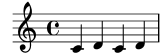
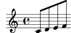
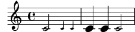
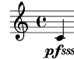
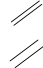
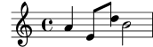
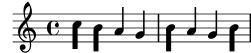

| [Top][Contents][Index] |
LilyPond – Extending
|
Diese Datei erklärt, wie man die Funktionalität von LilyPond Version 2.26.0 erweitern kann. |
| 1 Scheme-Tutorium | Programmieren innerhalb von LilyPond. | |
| 2 Schnittstellen für Programmierer | Wie man mit Scheme kommunizieren kann. | |
| 3 LilyPond Scheme-Schnittstellen | Information in die Noten senden und aus den Noten erhalten. | |
Anhänge | ||
|---|---|---|
| Appendix A GNU Free Documentation License | Die Lizenz dieses Dokuments. | |
| Appendix B Register | ||
|
Zu mehr Information, wie dieses Handbuch unter den anderen Handbüchern positioniert, oder um dieses Handbuch in einem anderen Format zu lesen, besuchen Sie bitte Handbücher. Wenn Ihnen Handbücher fehlen, finden Sie die gesamte Dokumentation unter https://lilypond.org/. |
| [ << Top ] | [Top][Contents][Index] | [ Schnittstellen für Programmierer >> ] |
| [ < Top ] | [ Up: Top ] | [ Einleitung in Scheme > ] |
1 Scheme-Tutorium
LilyPond verwendet die Scheme-Programmiersprache sowohl als Teil der Eingabesyntax als auch als internen Mechanismus, um Programmmodule zusammenzufügen. Dieser Abschnitt ist ein sehr kurzer Überblick über die Dateneingabe mit Scheme. Wenn Sie mehr über Scheme wissen wollen, gehen Sie zu https://www.schemers.org.
LilyPond benutzt die GNU Guile-Implementation von Scheme, die auf dem „R5RS“-Standard von Scheme basiert. Wenn Sie Scheme lernen wollen, um es innerhalb von LilyPond zu benutzen, wird es nicht empfohlen, mit einer anderen Implementation (die sich auf einen anderen Standard bezieht) zu arbeiten. Information zu Guile findet sich unter https://www.gnu.org/software/guile/. Der „R5RS“-Standard von Scheme befindet sich unter der Adresse https://www.schemers.org/Documents/Standards/R5RS/.
| 1.1 Einleitung in Scheme | ||
| 1.2 Scheme in LilyPond | ||
| 1.3 Komplizierte Funktionen erstellen |
| [ << Scheme-Tutorium ] | [Top][Contents][Index] | [ Schnittstellen für Programmierer >> ] |
| [ < Scheme-Tutorium ] | [ Up: Scheme-Tutorium ] | [ Scheme-Sandkasten > ] |
1.1 Einleitung in Scheme
Wir wollen mit einer Einführung in Scheme beginnen. Für diese kurze Einführung soll der Guile-Interpreter genommen werden, um zu erforschen, wie die Sprache funktioniert. Nach besserer Bekanntschaft mit Scheme soll gezeigt werden, wie die Sprache in LilyPond-Dateien eingefügt werden kann.
| 1.1.1 Scheme-Sandkasten | ||
| 1.1.2 Scheme-Variablen | ||
| 1.1.3 Einfache Scheme-Datentypen | ||
| 1.1.4 Zusammengesetzte Scheme-Datentypen | ||
| 1.1.5 Berechnungen in Scheme | ||
| 1.1.6 Scheme-Prozeduren | ||
| 1.1.7 Scheme-Konditionale |
| [ << Scheme-Tutorium ] | [Top][Contents][Index] | [ Schnittstellen für Programmierer >> ] |
| [ < Einleitung in Scheme ] | [ Up: Einleitung in Scheme ] | [ Scheme-Variablen > ] |
1.1.1 Scheme-Sandkasten
Die LilyPond-Installation enthält gleichzeitig auch die
Guile-Implementation von Scheme. Auf den meisten Systemen kann
man in einer Scheme-sandbox experimentieren, indem man ein
Kommandozeilen-Fenster öffnet und guile aufruft. Unter
einigen Systemen, insbesondere unter Windows, muss man evtl.
die Umgebungsvariable GUILE_LOAD_PATH auf das Verzeichnis
../usr/share/guile/1.8 innerhalb des LilyPond-Installationsverzeichnisses
setzen (der vollständige Pfad ist erklärt in Mehr Information).
Alternativ können Windows-Benutzer auch einfach „Ausführen“ im
Startmenü wählen und guile schreiben.
Es gibt auch eine direkte Scheme-Umgebung mit allen LilyPond-Voreinstellungen, die man auf der Kommandozeile mit folgendem Befehl aufrufen kann:
lilypond scheme-sandbox
Wenn guile einmal läuft, erhält man die Eingabeaufforderung von guile:
guile>
Man kann Scheme-Ausdrucke hier eingeben und mit Scheme experimentieren. Siehe die Datei ly/scheme-sandbox.ly zu Information, wie man die GNU readline-Bibliothek benutzen kann, um bessere Scheme-Formatierung der Kommandozeile zu erhalten. Wenn die readline-Bibliothek für interaktive Guile-Sitzungen außerhalb von LilyPond schon aktiviert ist, sollte es auch in der Sandbox funktionieren.
| [ << Scheme-Tutorium ] | [Top][Contents][Index] | [ Schnittstellen für Programmierer >> ] |
| [ < Scheme-Sandkasten ] | [ Up: Einleitung in Scheme ] | [ Einfache Scheme-Datentypen > ] |
1.1.2 Scheme-Variablen
Scheme-Variablen können jeglichen gültigen Scheme-Wert erhalten, auch Scheme-Prozeduren.
Scheme-Variablen werden mit define definiert:
guile> (define a 2) guile>
Scheme-Variablen können an der Guile-Eingabeaufforderung ausgewertet werden, indem man einfach die Variable eintippt.
guile> a 2 guile>
Scheme-Variablen können auf dem Bildschirm ausgegeben werden, indem man
display zum Anzeigen benutzt:
guile> (display a) 2guile>
Sowohl der Wert 2 als auch die Eingabeaufforderung guile
werden auf der gleichen Zeile ausgegeben. Das kann man vermeiden, indem
man eine newline-Prozedur für eine Leerzeile aufruft oder das
Zeichen für eine neue Zeile anzeigen lässt:
guile> (display a)(newline) 2 guile> (display a)(display "\n") 2 guile>
Wenn eine Variable einmal erstellt wurde, kann ihr Wert durch set!
verändert werden:
guile> (set! a 12345) guile> a 12345 guile>
| [ << Scheme-Tutorium ] | [Top][Contents][Index] | [ Schnittstellen für Programmierer >> ] |
| [ < Scheme-Variablen ] | [ Up: Einleitung in Scheme ] | [ Zusammengesetzte Scheme-Datentypen > ] |
1.1.3 Einfache Scheme-Datentypen
Das Grundlegendste an einer Sprache sind Daten: Zahlen, Zeichen, Zeichenketten, Listen usw. Hier ist eine Liste der Datentypen, die für LilyPond-Eingabedateien relevant sind.
- Boolesche Variablen
Werte einer Booleschen Variable sind Wahr oder Falsch. Die Scheme-Entsprechung für Wahr ist
#tund für Falsch#f.- Zahlen
Zahlen werden wie üblich eingegeben,
1ist die (ganze) Zahl Eins, während-1.5eine Gleitkommazahl (also eine nicht-ganze) ist.- Zeichenketten
Zeichenketten werden in doppelte Anführungszeichen gesetzt:
"Das ist eine Zeichenkette"
Zeichenketten können über mehrere Zeilen reichen:
"Das ist eine Zeichenkette"
und die Zeichen für eine neue Zeile am Ende jeder Zeile werden auch in die Zeichenkette aufgenommen.
Zeichen für eine neue Zeile können auch hinzugefügt werden, indem man
\nin die Zeichenkette aufnimmt."das\nist eine\nmehrzeilige Zeichenkette"
Anführungszeichen und neue Zeilen können auch mit sogenannten Fluchtsequenzen eingefügt werden. Die Zeichenkette
a sagt "b"wird wie folgt eingegeben:"a sagt \"b\""
Weitere zusätzliche Scheme-Datentypen, die hier nicht besprochen wurden, finden sich in einer vollständigen Liste der Scheme-Datentypen in der Guile-Referenzanleitung: http://www.gnu.org/software/guile/manual/html_node/Simple-Data-Types.html.
| [ << Scheme-Tutorium ] | [Top][Contents][Index] | [ Schnittstellen für Programmierer >> ] |
| [ < Einfache Scheme-Datentypen ] | [ Up: Einleitung in Scheme ] | [ Berechnungen in Scheme > ] |
1.1.4 Zusammengesetzte Scheme-Datentypen
Es gibt auch zusammengesetzte Datentypen in Scheme. Die Datentypen, die in LilyPond häufig benutzt werden, beinhalten Paare, Listen, assoziative Listen und Hash-Tabellen.
Paare (pair)
Der wichtigste zusammengesetzte Datentyp in Scheme ist ein Paar (pair).
Wie aus dem Namen schon hervorgeht, besteht ein Paar aus zwei zusammengeschweißten
Werten. Die Prozedur um ein Paar zu erstellen ist cons.
guile> (cons 4 5) (4 . 5) guile>
Das Paar wird dargestellt als zwei Elemente, von Klammern umgeben
und durch Leerzeichen und einen Punkt (.) getrennt. Der Punkt ist
kein Dezimalpunkt, sondern markiert die Gruppe als Paar.
Paare können auch wörtlich eingegeben werden, indem man ihnen voraus ein
einfaches Anführungszeichen (' setzt.
guile> '(4 . 5) (4 . 5) guile>
Beide Elemente eines Paares können beliebige gültige Scheme-Werte sein:
guile> (cons #t #f)
(#t . #f)
guile> '("blah-blah" . 3.1415926535)
("blah-blah" . 3.1415926535)
guile>
Das erste Element eines Paares kann mit der Prozedur car,
das zweite mit der Prozedur cdr angesprochen werden.
guile> (define mypair (cons 123 "hello there") ... ) guile> (car mypair) 123 guile> (cdr mypair) "hello there" guile>
Achtung: cdr wird ausgesprochen wie "kudd-err", nach Sussman und
Abelson, siehe
http://mitpress.mit.edu/sicp/full-text/book/book-Z-H-14.html#footnote_Temp_133
Listen (list)
Ein sehr häufiger Datentyp in Scheme ist die Liste (list). Formal
gesehen wird eine Liste entweder als leere Liste definiert
(repräsentiert als '()), oder als ein Paar, dessen cdr
eine Liste ist.
Es gibt viele Arten, Listen zu erstellen. Die vielleicht häufigste Methode
ist die list-Prozedur:
guile> (list 1 2 3 "abc" 17.5) (1 2 3 "abc" 17.5)
Wie man sehen kann, wird eine Liste dargestellt in Form der einzelnen Elemente, getrennt durch ein Leerzeichen und als Gruppe in Klammern eingeschlossen. Anders als bei einem Paar, befindet sich kein Punkt zwischen den Elementen.
Eine Liste kann auch als wörtliche Liste notiert werden, indem man die enthaltenen Elemente in Klammern einschließt und ein einfaches Anführungszeichen voranschreibt:
guile> '(17 23 "foo" "bar" "bazzle") (17 23 "foo" "bar" "bazzle")
Listen haben eine zentrale Stellung in Scheme. Scheme wird als Dialekt von Lisp angesehen, und das Wort „lisp“ steht für „List Processing“. Scheme-Ausdrücke sind immer Listen.
Assoziative Listen (alist)
Eine besonderer Listentyp ist die assoziative Liste oder alist. Eine Alist wird benutzt, um Daten zum einfachen Abrufen zu speichern.
Alisten sind Listen, deren Elemente als Paare kommen. Der car-Teil
jedes Elements wird als Schlüssel (key) bezeichnet, der
cdr-Teil jedes Elements wird Wert (value) genannt.
Die Scheme-Prozedur assoc wird benutzt, um einen Eintrag aus einer
Aliste aufzurufen, und mit cdr wird sein Wert abgefragt:
guile> (define my-alist '((1 . "A") (2 . "B") (3 . "C"))) guile> my-alist ((1 . "A") (2 . "B") (3 . "C")) guile> (assoc 2 my-alist) (2 . "B") guile> (cdr (assoc 2 my-alist)) "B" guile>
Alisten werden sehr viel in LilyPond genutzt, um Eigenschaften und andere Daten zu speichern.
Hash-Tabellen (hash table)
Eine Datenstruktur, die ab und zu in LilyPond eingesetzt wird. Eine Hash-Tabelle ähnelt einem Array, aber die Indexe des Arrays können beliebige Scheme-Werte sein, nicht nur Integre.
Hash-Tabellen sind effizienter als Alisten, wenn man viele Daten speichern will und die Daten sich oft ändern.
Die Syntax, mit der Hash-Tabellen erstellt werden, ist etwas komplex, aber man kann Beispiele hierzu im LilyPond-Quellcode finden.
guile> (define h (make-hash-table 10)) guile> h #<hash-table 0/31> guile> (hashq-set! h 'key1 "val1") "val1" guile> (hashq-set! h 'key2 "val2") "val2" guile> (hashq-set! h 3 "val3") "val3"
Werte werden aus den Hash-Tabellen mit hashq-ref ausgelesen.
guile> (hashq-ref h 3) "val3" guile> (hashq-ref h 'key2) "val2" guile>
Schlüssel und Werte werden als Paar mit hashq-get-handle ausgelesen.
Das ist die beste Art, weil hier #f ausgegeben wird, wenn ein
Schlüssel nicht gefunden werden kann.
guile> (hashq-get-handle h 'key1) (key1 . "val1") guile> (hashq-get-handle h 'frob) #f guile>
| [ << Scheme-Tutorium ] | [Top][Contents][Index] | [ Schnittstellen für Programmierer >> ] |
| [ < Zusammengesetzte Scheme-Datentypen ] | [ Up: Einleitung in Scheme ] | [ Scheme-Prozeduren > ] |
1.1.5 Berechnungen in Scheme
Scheme kann verwendet werden, um Berechnungen durchzuführen. Es
verwendet eine Präfix-Syntax. Um 1 und 2 zu addieren, muss
man (+ 1 2) schreiben, und nicht 1+2, wie in traditioneller
Mathematik.
guile> (+ 1 2) 3
Berechnungen können geschachtelt werden und das Ergebnis einer Berechnung kann für eine neue Berechnung eingesetzt werden.
guile> (+ 1 (* 3 4)) 13
Diese Berechnungen sind Beispiele von Auswertungen. Ein Ausdruck
wie (* 3 4) wird durch seinen Wert 12 ersetzt.
Scheme-Berechnungen können zwischen Integren und Nicht-Integren unterscheiden. Integre Berechnungen sind exakt, während Nicht-Integre nach den passenden Genauigkeitseinschränkungen berechnet werden:
guile> (/ 7 3) 7/3 guile> (/ 7.0 3.0) 2.33333333333333
Wenn der Scheme-Berechner einen Ausdruck antrifft, der eine Liste darstellt, wird das erste Element der Liste als Prozedur behandelt, die mit Argumenten des Restes der Liste ausgewertet werden. Darum sind alle Operatoren in Scheme vorangestellt.
Wenn das erste Element eines Scheme-Ausdrucks, der eine Liste darstellt, kein Operator oder keine Prozedur ist, gibt es einen Fehler:
guile> (1 2 3) Backtrace: In current input: 52: 0* [1 2 3] <unnamed port>:52:1: In expression (1 2 3): <unnamed port>:52:1: Wrong type to apply: 1 ABORT: (misc-error) guile>
Hier kann man sehen, dass Scheme versucht hat, 1 als einen Operator oder eine Prozedur zu behandeln, was aber nicht möglich war. Darum der Fehler "Wrong type to apply: 1".
Wenn man also eine Liste erstellen will, braucht man also einen Listen-Operator oder man muss die Liste als wörtliches Zitat schreiben, sodass Scheme sie nicht auszuwerten versucht.
guile> (list 1 2 3) (1 2 3) guile> '(1 2 3) (1 2 3) guile>
Dieser Fehler kann durchaus vorkommen, wenn man Scheme unter LilyPond einsetzt.
| [ << Scheme-Tutorium ] | [Top][Contents][Index] | [ Schnittstellen für Programmierer >> ] |
| [ < Berechnungen in Scheme ] | [ Up: Einleitung in Scheme ] | [ Scheme-Konditionale > ] |
1.1.6 Scheme-Prozeduren
Scheme-Prozeduren sind ausführbare Scheme-Ausdrücke, die einen Wert ausgeben, der das Resultat ihrer Ausführung darstellt. Sie können auch Variablen verändern, die außerhalb dieser Prozedur definiert wurden.
Prozeduren definieren
Prozeduren werden in Scheme mit define definiert:
(define (function-name arg1 arg2 ... argn) scheme-expression-that-gives-a-return-value)
Beispielsweise könnte man eine Prozedur definieren, die den Durchschnitt berechnet:
guile> (define (average x y) (/ (+ x y) 2)) guile> average #<procedure average (x y)>
Wenn die Prozedur einmal definiert ist, wird sie aufgerufen indem man die Prozedur und die Argumente in eine Liste schreibt. Man könnte also den Durchschnitt von 3 und 12 berechnen:
guile> (average 3 12) 15/2
Prädikate
Scheme-Prozeduren, die Boolesche Werte ausgeben, werden oft als Prädikate (predicate) bezeichnet. Es herrscht die Übereinkunft, Prädikat-Bezeichnungen mit einem Fragezeichen abzuschließen:
guile> (define (less-than-ten? x) (< x 10)) guile> (less-than-ten? 9) #t guile> (less-than-ten? 15) #f
Wiedergabe-Werte
Scheme-Prozeduren geben immer einen Wiedergabe-Wert (return value) aus, welcher der Wert des letzten Ausdrucks ist, der in der Prozedur ausgeführt wurde. Der Wiedergabewert kann ein beliebiger gültiger Scheme-Wert sein, auch eine komplexe Datenstruktur oder eine Prozedur.
Manchmal würden Benutzer gerne mehrere Scheme-Ausdrucke in einer Prozedur haben.
Es gibt zwei Arten, wie mehrere Ausdrücke kombiniert werden können. Die erste
Art ist die begin-Prozedur, der es ermöglicht, dass mehrere Ausdrücke
ausgewertet werden und den Wert des letzten Ausdrucks wiedergibt.
guile> (begin (+ 1 2) (- 5 8) (* 2 2)) 4
Die andere Art, mehrere Ausdrücke zu kombinieren, ist eine let-Umgebung.
In dieser Umgebung wird eine Serie von Verbindungen erstellt, und dann wird eine
Sequenz von Ausdrücken ausgewertet, die diese Bindungen einschließen können.
Der Wiedergabewert der let-Umgebung ist der Wiedergabewert der letzten Aussage
in der let-Umgebung:
guile> (let ((x 2) (y 3) (z 4)) (display (+ x y)) (display (- z 4)) ... (+ (* x y) (/ z x))) 508
| [ << Scheme-Tutorium ] | [Top][Contents][Index] | [ Schnittstellen für Programmierer >> ] |
| [ < Scheme-Prozeduren ] | [ Up: Einleitung in Scheme ] | [ Scheme in LilyPond > ] |
1.1.7 Scheme-Konditionale
if
Scheme hat eine if-Prozedur:
(if test-expression true-expression false-expression)
test-expression ist ein Ausdruck, der einen Booleschen
Wert zurück gibt. Wenn test-expression den Wert #t
ausgibt, gibt die if-Prozedur den Wert von true-expression aus,
in allen anderen Fällen den Wert von false-expression.
guile> (define a 3) guile> (define b 5) guile> (if (> a b) "a is greater than b" "a is not greater than b") "a is not greater than b"
cond
Eine andere konditionale Prozedur in Scheme ist
cond:
(cond (test-expression-1 result-expression-sequence-1)
(test-expression-2 result-expression-sequence-2)
...
(test-expression-n result-expression-sequence-n))
Beispielsweise:
guile> (define a 6) guile> (define b 8) guile> (cond ((< a b) "a is less than b") ... ((= a b) "a equals b") ... ((> a b) "a is greater than b")) "a is less than b"
| [ << Scheme-Tutorium ] | [Top][Contents][Index] | [ Schnittstellen für Programmierer >> ] |
| [ < Scheme-Konditionale ] | [ Up: Scheme-Tutorium ] | [ LilyPond Scheme-Syntax > ] |
1.2 Scheme in LilyPond
| [ << Scheme-Tutorium ] | [Top][Contents][Index] | [ Schnittstellen für Programmierer >> ] |
| [ < Scheme in LilyPond ] | [ Up: Scheme in LilyPond ] | [ LilyPond-Variablen > ] |
1.2.1 LilyPond Scheme-Syntax
Der Guile-Auswerter ist ein Teil von LilyPond, sodass Scheme also auch in normale LilyPond-Eingabedateien eingefügt werden kann. Es gibt mehrere Methoden, um Scheme in LilyPond zu integrieren.
Die einfachste Weise ist es, ein Rautenzeichen # vor einem
Scheme-Ausdruck zu benutzen.
Die Eingabe von LilyPond ist in Zeichen und Ausdrücke gegliedert, so etwa wie die menschliche Sprache sich in Wörter und Sätze gliedert. LilyPond hat einen Lexer, der Zeichen erkennt (Zahlen, Zeichenketten, Scheme-Elemente, Tonhöhen usw.) und einen Parser, der die Syntax versteht. Wenn dann eine bestimmte Syntaxregel als zuständig erkannt wurde, werden die damit verknüpften Aktionen ausgeführt.
Die Rautenzeichenmethode (#), mit der Scheme eingebettet werden kann,
passt sehr gut in dieses System. Wenn der Lexer ein Rautenzeichen sieht, ruft
er den Scheme-reader auf, um den ganzen Scheme-Ausdruck zu lesen (das kann eine
Variable, ein Ausdruck in Klammern oder verschiedene andere Sachen sein). Nachdem
der Scheme-Ausdruck gelesen wurde, wird er als Wert eines SCM_TOKEN in der
Grammatik gespeichert. Wenn der Parser weiß, wie er diesen Wert benutzen kann,
ruft er Guile auf, um den Scheme-Ausdruck auszuwerten. Weil der Parser normalerweise
dem Lexer etwas voraus sein muss, ist die Trennung von Lesen und Auswerten zwischen
Lexer und Parser genau das richtige, um die Auswertung von LilyPond- und
Scheme-Ausdrücken synchron zu halten. Aus diesem Grund sollte das Rautenzeichen
zum Einbinden von Scheme immer benutzt werden, wenn es möglich ist.
Eine andere Möglichkeit, Scheme aufzurufen, ist die Benutzung des Dollarzeichens
($) anstelle der Raute. In diesem Fall wertet LilyPond den Code sofort
aus, nachdem der Lexer ihn gelesen hat. Dabei wird der resultierende
Scheme-Ausdruckstyp geprüft und eine Tokentyp dafür ausgesucht (einer von mehreren
xxx_IDENTIFIER in der Syntax). Wenn der Wert des Ausdrucks gültig ist
(der Guilde-Wert für *unspecified*), dann wird nichts an den Parser
übergeben.
Das ist auch der gleiche Mechanismus, nach dem LilyPond funktioniert, wenn man eine Variable oder musikalische Funktion mit ihrer Bezeichnung ausruft, wie
in \Bezeichnung, mit dem einzigen Unterschied, dass ihre Bezeichnung durch den
LilyPond-Lexer bestimmt wird, ohne den Scheme-reader einzubeziehen, und also
nur Variablen akzeptiert werden, die im aktuellen LilyPond-Modus gültig sind.
Die direkte Auswirkung von $ kann zu Überraschungen führen, siehe
Eingabe-Variablen und Scheme. Es bietet sich daher an, # immer
zu benützen, wenn der Parser es unterstützt. Innerhalb von musikalischen
Ausdrücken werden Ausdrücke, die mit # erstellt werden, tatsächlich
als Noten interpretiert. Sie werden jedoch nicht vor der Benutzung
kopiert. Wenn Sie Teil einer Struktur sind, die noch einmal benutzt werden
soll, muss man eventuell ly:music-deep-copy explizit einsetzen.
Es gibt auch die Operatoren $@ und #@, die eine „listentrennende“
Funktion aufweisen, indem sie alle Elemente einer Liste in den umgebenden
Kontext einfügen.
Jetzt wollen wir uns tatsächlichen Scheme-Code anschauen. Scheme-Prozeduren können in LilyPond-Eingabedateien definiert werden:
#(define (average a b c) (/ (+ a b c) 3))
LilyPond-Kommentare (% oder %{ %}) können innerhalb
von Scheme-Code nicht benutzt werden, nicht einmal in einer LilyPond-Eingabedatei,
weil der Guile-Interpreter und nicht der LilyPond-Parser den Scheme-Ausdruck
liest. Kommentare in Guile Scheme werden wie folgt notiert:
; Einzeiliges Kommentar #! Guile-Stil Blockkommentar (nicht schachtelbar) Diese Kommentare werden von Scheme-Programmierern selten benutzt und nie im Quellcode von LilyPond !#
Für den Rest dieses Abschnitts soll angenommen werden, dass die Daten in
einer LilyPond-Eingabedatei notiert werden sollen, sodass immer #
vor die Scheme-Ausdrücke gestellt wird.
Alle Scheme-Ausdrücke auf oberster Ebene in einer LilyPond-Eingabedatei
können in einen einzigen Scheme-Ausdruck zusammengefasst werden mit
begin:
#(begin (define foo 0) (define bar 1))
| [ << Scheme-Tutorium ] | [Top][Contents][Index] | [ Schnittstellen für Programmierer >> ] |
| [ < LilyPond Scheme-Syntax ] | [ Up: Scheme in LilyPond ] | [ Eingabe-Variablen und Scheme > ] |
1.2.2 LilyPond-Variablen
LilyPond-Variablen werden intern als Scheme-Variablen gespeichert. Darum ist
Zwoelf = 12
das Gleiche wie
#(define Zwoelf 12)
Das bedeutet, dass Scheme-Ausdrücke auf LilyPond-Variablen zugreifen können. Man könnte also schreiben:
Vierundzwanzig = #(* 2 Zwoelf)
was zur Folge hätte, dass die Zahl 24 in der LilyPond (und Scheme-)Variablen
Vierundzwanzig gespeichert wird.
Üblicherweise greift man auf LilyPond-Variablen zu, indem man ihnen einen
Backslash voranstellt. Siehe auch LilyPond Scheme-Syntax, also etwa
\Vierundzwanzig. Weil dadurch eine Kopie des Wertes für die meisten
von LilyPonds internen Typen erstellt wird (insbesondere musikalische Funktionen),
erstellen musikalische Funktionen normalerweise Kopien von Material, das sie
verändern. Aus diesem Grund sollten musikalische Funktionen, die mit #
aufgerufen werden, kein Material enthalten, dass entweder von Grund auf neu
erstellt wird oder explizit kopiert wird, sondern besser direkt auf das relevante
Material verweisen.
| [ << Scheme-Tutorium ] | [Top][Contents][Index] | [ Schnittstellen für Programmierer >> ] |
| [ < LilyPond-Variablen ] | [ Up: Scheme in LilyPond ] | [ Scheme in LilyPond importieren > ] |
1.2.3 Eingabe-Variablen und Scheme
Das Eingabeformat unterstützt die Notation von Variablen: Im folgenden
Beispiel wird ein musikalischer Ausdruck einer Variablen mit der
Bezeichnung traLaLa zugewiesen:
traLaLa = { c'4 d'4 }
Variablen haben beschränkte Geltungsbereiche: im unten stehenden Beispiel
enthält auch die \layout-Umgebung eine traLaLa-Variable,
die sich aber von der traLaLa-Variable auf oberster Ebene unterscheidet:
traLaLa = { c'4 d'4 }
\layout { traLaLa = 1.0 }
Jede Eingabedatei ist solch ein Gültigkeitsbereich, und alle
\header-, \midi- und \layout-Umgebungen
sind Gültigkeitsbereiche, die in diesen obersten Gültigkeitsbereich
eingebettet sind.
Sowohl Variablen als auch Gültigkeitsbereiche sind im Guile Modulsystem eingebaut. Ein anonymes Scheme-Modul wird jedem Gültigkeitsbereich angehängt. Eine Zuweisen in der Form von
traLaLa = { c'4 d'4 }
wird intern in die Scheme-Definition
(define traLaLa Scheme-Wert von `... ')
konvertiert.
Das bedeutet, dass LilyPond-Variablen und Scheme-Variablen frei gemischt
werden können. Im folgenden Beispiel wird ein Notenfragment in der
Variable traLaLa gespeichert und mit Scheme dupliziert. Das
Resultat wird in eine \score-Umgebung mit einer weiteren
Variable twice importiert:
traLaLa = { c'4 d'4 } #(define newLa (map ly:music-deep-copy (list traLaLa traLaLa))) #(define twice (make-sequential-music newLa)) \twice

Das ist ein interessantes Beispiel. Die Zuweisung findet erst statt,
nachdem der Parser sichergestellt hat, dass nichts folgt, das Ähnlichkeit
mit \addlyrics hat, sodass er prüfen muss, was als nächstes kommt.
Er liest # und den darauf folgenden Scheme-Ausdruck, ohne ihn
auszuwerten, so dass er weiterlesen und erst danach
wird der Scheme-Code ohne Probleme ausführen kann.
| [ << Scheme-Tutorium ] | [Top][Contents][Index] | [ Schnittstellen für Programmierer >> ] |
| [ < Eingabe-Variablen und Scheme ] | [ Up: Scheme in LilyPond ] | [ Objekteigenschaften > ] |
1.2.4 Scheme in LilyPond importieren
Das Beispiel zeigt, wie man musikalische Ausdrücke aus der Eingabe in den
Scheme-Auswerter „exportieren“ kann. Es geht auch andersherum. Indem
man Scheme-Werte nach $ schreibt, wird ein
Scheme-Wert interpretiert, als ob er in LilyPond-Syntax eingeben wäre.
Anstatt \twice zu definieren, könne man also auch schreiben:
... $(make-sequential-music newLa)
Mann kann $ zusammen mit einem Scheme-Ausdruck überall benutzen,
wo auch \Bezeichnung gültig wäre, nachdem der Scheme-Ausdruck
einmal einer Variable Bezeichnung zugewiesen worden ist. Der Austausch
geschieht im Lexer, sodass LilyPond den Unterschied gar nicht merkt.
Ein negativer Effekt ist aber das Timing. Wenn man $ anstelle von
# für die Definition von newLa im obigen Beispiel eingesetzt
hätte, würde der folgende Scheme-Ausdruck fehlschlagen, weil traLaLa
noch nicht definiert worden wäre. Zu einer Erklärung dieses Timingproblems
siehe LilyPond Scheme-Syntax.
Eine weitere Bequemlichkeit können die „listentrennenden“ Operatoren
$@ und #@ bieten, indem sie die Elemente einer Liste
in den umgebenden Kontext einfügen. Wenn man sie einsetzt, hätte der
letzte Teil des Beispiels auch so geschrieben werden können:
...
{ #@newLa }
Hier wird jedes Element der Liste, welche in newLa gespeichert ist,
der Reihenfolge nach genommen und in die Liste eingefügt, als ob man
geschrieben hätte:
{ #(first newLa) #(second newLa) }
In allen diesen Formen findet die Auswertung des Scheme-Codes statt, während die Eingabe noch gelesen wird, entweder im Lexer oder im Parser. Wenn man es später ausgeführt haben möchte, muss man Leere Scheme-Funktionen benutzen oder es in einem Makro speichern:
#(define (nopc)
(ly:set-option 'point-and-click #f))
...
#(nopc)
{ c'4 }
Bekannte Probleme und Warnungen
Scheme- und LilyPond-Variablen können nicht gemischt werden, wenn man die --safe-Option benutzt.
| [ << Scheme-Tutorium ] | [Top][Contents][Index] | [ Schnittstellen für Programmierer >> ] |
| [ < Scheme in LilyPond importieren ] | [ Up: Scheme in LilyPond ] | [ Zusammengesetzte LilyPond-Variablen > ] |
1.2.5 Objekteigenschaften
Objekteigenschaften werden in LilyPond in Form von Alisten-Ketten gespeichert, also als Listen von Alisten. Eigenschaften werden geändert, indem man Werte an den Anfang der Eigenschaftsliste hinzufügt. Eigenschaften werden gelesen, indem Werte aus der Aliste gelesen werden.
Ein neuer Wert für eine Eigenschaft kann gesetzt werden, indem man der Alist einen Wert mit Schlüssel und dem Wert zuweist. Die LilyPond-Syntax hierfür ist:
\override Stem.thickness = #2.6
Diese Anweisung verändert die Erscheinung der Notenhälse. Der Alist-Eintrag
'(thickness . 2.6) wird zu der Eigenschaftsliste eines
Stem-(Hals-)Objektes hinzugefügt.
thickness wird relativ zu den Notenlinien errechnet, in diesem
Fall sind die Hälse also 2,6 mal so dick wie die Notenlinien. Dadurch
werden Hälse fast zweimal so dick dargestellt, wie sie normalerweise sind.
Um zwischen Variablen zu unterscheiden, die in den Quelldateien direkt
definiert werden (wie Vierundzwanzig weiter oben), und zwischen denen,
die für interne Objekte zuständig sind, werden hier die ersteren
„Variablen“ genannt, die letzteren dagegen „Eigenschaften“.
Das Hals-Objekt hat also eine thickness-Eigenschaft, während
Vierundzwanzig eine Variable ist.
| [ << Scheme-Tutorium ] | [Top][Contents][Index] | [ Schnittstellen für Programmierer >> ] |
| [ < Objekteigenschaften ] | [ Up: Scheme in LilyPond ] | [ Interne musikalische Repräsentation > ] |
1.2.6 Zusammengesetzte LilyPond-Variablen
Abstände (offset)
Zweidimensionale Abstände (X- und Y-Koordinaten) werden
als pairs (Paare) gespeichert. Der car-Wert des
Abstands ist die X-Koordinate und der cdr-Wert die
Y-Koordinate.
\override TextScript.extra-offset = #'(1 . 2)
Hierdurch wird das Paar (1 . 2) mit der Eigenschaft extra-offset
des TextScript-Objektes verknüpft. Diese Zahlen werden in
Systembreiten gemessen, so dass der Befehl das Objekt eine Systembreite
nach rechts verschiebt und zwei Breiten nach oben.
Prozeduren, um mit Abständen zu arbeiten, finden sich in scm/lily-library.scm.
Brüche (fractions)
Brüche, wie sie LilyPond benutzt, werden wiederum als Paare gespeichert,
dieses Mal als unbezeichnete ganze Zahlen. Während Scheme rationale Zahlen
als einen negativen Typ darstellen kann, sind musikalische gesehen
‘2/4’ und ‘1/2’ nicht das selbe, sodass man zwischen beiden unterscheiden
können muss. Ähnlich gibt es auch keine negativen Brüche in LilyPonds Sinn.
Somit bedeutet 2/4 in LilyPond (2 . 4) in Scheme, und #2/4 in
LilyPond bedeutet 1/2 in Scheme.
Bereiche (extend)
Paare werden auch benutzt, um Intervalle zu speichern, die einen Zahlenbereich
vom Minimum (dem car) bis zum Maximum (dem cdr) darstellen.
Intervalle werden benutzt, um die X- und Y-Ausdehnung von druckbaren
Objekten zu speichern. Bei X-Ausdehnungen ist car die linke
X-Koordinate und cdr die rechte X-Koordinate. Für Y-Ausdehnungen
ist car die untere Koordinate und cdr die obere Koordinate.
Prozeduren, um mit Intervallen zu arbeiten, finden sich in scm/lily-library.scm. Diese Prozeduren sollten benutzt, wenn es möglich ist, um den Code konsistent zu halten.
Eigenschafts-Alisten (property alist)
Eine Eigenschafts-Aliste ist eine LilyPond-Datenstruktur, die eine Aliste darstellt, deren Schlüssel Eigenschaften sind und deren Werte Scheme-Ausdrücke sind, die den erwünschen Wert der Eigenschaft ausgeben.
LilyPond-Eigenschaften sind Scheme-Symbole, wie etwa 'thickness
(Dicke).
Alisten-Ketten (alist chains)
Eine Alisten-Kette ist eine Liste, die Eigenschafts-Alisten enthält.
Die Menge aller Eigenschaften, die sich auf einen Grob auswirken, wird typischerweise in einer Alisten-Kette gespeichert. Um den Wert einer bestimmten Eigenschaft zu finden, die ein Grob haben soll, wird jede Liste in der Kette nach einander durchsucht, wobei nach einem Eintrag geschaut wird, der den Eigenschaftsschlüssel enthält. Der erste gefundene Alisten-Eintrag wird benutzt und dessen Wert ist der Wert der Eigenschaft.
Die Scheme-Prozedur chain-assoc-get wird normalerweise benutzt,
um Grob-Eigenschaftenwerte zu erhalten.
| [ << Scheme-Tutorium ] | [Top][Contents][Index] | [ Schnittstellen für Programmierer >> ] |
| [ < Zusammengesetzte LilyPond-Variablen ] | [ Up: Scheme in LilyPond ] | [ Komplizierte Funktionen erstellen > ] |
1.2.7 Interne musikalische Repräsentation
Intern werden Noten als Scheme-Liste dargestellt. Die Liste enthält verschiedene Elemente, die die Druckausgabe beeinflussen. Parsen nennt man den Prozess, der die Noten aus der LilyPond-Repräsentation in die interne Scheme-Repräsentation überführt.
Wenn ein musikalischer Ausdruck geparst wird, wird er in eine Gruppe von Scheme-Musikobjekten konvertiert. Die definierende Eigenschaft eines Musikobjektes ist, dass es Zeit einnimmt. Die Zeit, die ein Objekt braucht, wird Dauer (engl. duration) genannt. Dauern werden in rationalen Zahlen ausgedrückt, die die Länge des Musikobjekts in Ganzen Noten angeben.
Ein Musikobjekt hat drei Typen:
- Musikbezeichnung (music name): Jeder Musikausdruck hat eine Bezeichnung. Eine
Note beispielsweise erzeugt ein NoteEvent und
\simultaneousproduziert SimultaneousMusic. Eine Liste aller möglichen Ausdrücke findet sich in der Referenz der Interna, unter Music expressions. - Typ (type) oder Schnittstelle (interface): Jede Musikbezeichnung hat mehrere
Typen oder Schnittstellen, beispielsweise eine Note ist ein Ereignis (
event), aber auch ein Notenereignis (note-event), ein rhythmisches Ereignis (rhythmic-event) und ein Melodieereignis (melodic-event). Alle Musikklassen sind in der Referenz der Interna aufgelistet, unter Music classes. - C++-Objekt: Jedes Musikobjekt ist durch ein Objekt der C++-Klasse
Musicrepräsentiert.
Die eigentliche Information eines musikalischen Ausdrucks wird in Eigenschaften
gespeichert. Ein NoteEvent beispielsweise hat die Eigenschaften
Tonhöhe (pitch) und Dauer (duration), die die Dauer und die
Tonhöhe der Note speichern. Eine Liste aller möglichen Eigenschaften findet
sich in der Referenz der Interna, unter
Music properties.
Ein zusammengesetzter musikalischer Ausdruck ist ein Musikobjekt, das andere
Musikobjekte als Eigenschaften enthält. Eine Liste an Objekten kann in der
elements-Eigenschaft eines Musikobjekts bzw. ein einziges
Ableger-Musikelement in der element-Eigenschaft gespeichert werden.
SequentialMusic beispielsweise hat sein einziges Argument in
element. Der Körper einer Wiederholung wird in der element-Eigenschaft
von VoltaRepeatedMusic gespeichert, und die alternativen Endungen
in elements.
| [ << Scheme-Tutorium ] | [Top][Contents][Index] | [ Schnittstellen für Programmierer >> ] |
| [ < Interne musikalische Repräsentation ] | [ Up: Scheme-Tutorium ] | [ Musikalische Funktionen darstellen > ] |
1.3 Komplizierte Funktionen erstellen
Dieser Abschnitt zeigt, wie man Information zusammensucht, um komplizierte musikalische Funktionen zu erstellen.
| 1.3.1 Musikalische Funktionen darstellen | ||
| 1.3.2 Eigenschaften von Musikobjekten | ||
| 1.3.3 Verdoppelung einer Note mit Bindebögen (Beispiel) | ||
| 1.3.4 Artikulationszeichen zu Noten hinzufügen (Beispiel) |
1.3.1 Musikalische Funktionen darstellen
Wenn man eine musikalische Funktion erstellt, ist es oft
hilfreich sich anzuschauen, wie musikalische Funktionen
intern gespeichert werden. Das kann mit der Funktion
\displayMusic erreicht werden:
{
\displayMusic { c'4\f }
}
zeigt:
(make-music
'SequentialMusic
'elements
(list (make-music
'NoteEvent
'articulations
(list (make-music
'AbsoluteDynamicEvent
'text
"f"))
'duration
(ly:make-duration 2 0 1/1)
'pitch
(ly:make-pitch 0 0 0))))
Normalerweise gibt LilyPond diese Ausgabe auf der Konsole mit allen anderen Nachrichten aus. Um die wichtigen Nachrichten in einer Datei zu speichern, kann die Ausgabe in eine Datei umgeleitet werden:
lilypond file.ly >display.txt
Mit LilyPond- und Scheme-Magie kann man LilyPond anweisen, genau diese Ausgabe an eine eigene Datei zu senden:
{
#(with-output-to-file "display.txt"
(lambda () #{ \displayMusic { c'4\f } #}))
}
Mit etwas Umformatierung ist die gleiche Information sehr viel einfacher zu lesen:
(make-music 'SequentialMusic
'elements (list
(make-music 'NoteEvent
'articulations (list
(make-music 'AbsoluteDynamicEvent
'text
"f"))
'duration (ly:make-duration 2 0 1/1)
'pitch (ly:make-pitch 0 0 0))))
Eine musikalische { ... }-Sequenz hat die Bezeichnung
SequentialMusic und ihre inneren Ausdrücke werden als
Liste in seiner 'elements-Eigenschaft gespeichert. Eine
Note ist als als ein EventChord-Objekt dargestellt (welches Dauer und
Tonhöhe speichert) und zusätzliche Information enthält (in
diesem Fall ein AbsoluteDynamicEvent mit einer
"f"-Text-Eigenschaft).
\displayMusic gibt die Noten aus, die dargestellt werden, sodass
sie sowohl angezeigt als auch ausgewertet werden. Um die Auswertung zu
vermeiden, kann \void vor \displayMusic geschrieben werden.
1.3.2 Eigenschaften von Musikobjekten
TODO – make sure we delineate between music properties, context properties, and layout properties. These are potentially confusing.
Schauen wir uns ein Beispiel an:
someNote = c' \displayMusic \someNote ===> (make-music 'NoteEvent 'duration (ly:make-duration 2 0 1/1) 'pitch (ly:make-pitch 0 0 0))
Das NoteEvent-Objekt ist die Repräsentation von someNote.
Einfach. Wie fügt man denn ein c’ in einen Akkorde ein?
someNote = <c'>
\displayMusic \someNote
===>
(make-music
'EventChord
'elements
(list (make-music
'NoteEvent
'duration
(ly:make-duration 2 0 1/1)
'pitch
(ly:make-pitch 0 0 0))))
Jetzt ist das NoteEvent-Objekt das erste Objekt der
'elements-Eigenschaft von someNote.
Die display-scheme-music-Funktion ist die Funktion, die von
\displayMusic eingesetzt wird, um die Scheme-Repräsentation
eines musikalischen Ausdrucks anzuzeigen.
#(display-scheme-music (first (ly:music-property someNote 'elements))) ===> (make-music 'NoteEvent 'duration (ly:make-duration 2 0 1/1) 'pitch (ly:make-pitch 0 0 0))
Danach wird die Tonhöhe der Note von der 'pitch-Eigenschaft
des NoteEvent-Objektes gelesen:
#(display-scheme-music
(ly:music-property (first (ly:music-property someNote 'elements))
'pitch))
===>
(ly:make-pitch 0 0 0)
Die Tonhöhe einer Note kann geändert werden, indem man diese
'pitch-Eigenschaft umdefiniert:
#(set! (ly:music-property (first (ly:music-property someNote 'elements))
'pitch)
(ly:make-pitch 0 1 0)) ;; Die Tonhöhen auf d' verändern.
\displayLilyMusic \someNote
===>
d'
1.3.3 Verdoppelung einer Note mit Bindebögen (Beispiel)
In diesem Abschnitt soll gezeigt, werden, wie man eine
Funktion erstellt, die eine Eingabe wie a
nach { a( a) } umdefiniert. Dazu wird zuerst die
interne Repräsentation der Musik betrachtet, die
das Endergebnis darstellt:
\displayMusic{ a'( a') }
===>
(make-music
'SequentialMusic
'elements
(list (make-music
'NoteEvent
'articulations
(list (make-music
'SlurEvent
'span-direction
-1))
'duration
(ly:make-duration 2 0 1/1)
'pitch
(ly:make-pitch 0 5 0))
(make-music
'NoteEvent
'articulations
(list (make-music
'SlurEvent
'span-direction
1))
'duration
(ly:make-duration 2 0 1/1)
'pitch
(ly:make-pitch 0 5 0))))
Eine schlechte Nachricht ist, dass die
SlurEvent-Ausdrücke „innerhalb“
der Noten (in ihrer articulations-Eigenschaft) hinzugefügt werden müssen.
Jetzt folgt eine Betrachtung der Eingabe:
\displayMusic a' ===> (make-music 'NoteEvent 'duration (ly:make-duration 2 0 1/1) 'pitch (ly:make-pitch 0 5 0))))
In der gewünschten Funktion muss also dieser Ausdruck
kopiert werden (sodass zwei Noten vorhanden sind, die
eine Sequenz bilden), dann müssen SlurEvent
zu der 'articulations-Eigenschaft jeder Noten hinzugefügt
werden, und schließlich muss eine SequentialMusic
mit den beiden EventChords erstellt werden. Um zu
einer Eigenschaft etwas hinzuzufügen, ist es nützlich zu wissen, dass
eine nicht gesetzte Eigenschaft als '() gelesen wird, sodass
keine speziellen Überprüfungen nötig sind, bevor ein anderes
Element vor die articulations-Eigenschaft gesetzt wird.
doubleSlur = #(define-music-function (note) (ly:music?)
"Return: { note ( note ) }.
`note' is supposed to be a single note."
(let ((note2 (ly:music-deep-copy note)))
(set! (ly:music-property note 'articulations)
(cons (make-music 'SlurEvent 'span-direction -1)
(ly:music-property note 'articulations)))
(set! (ly:music-property note2 'articulations)
(cons (make-music 'SlurEvent 'span-direction 1)
(ly:music-property note2 'articulations)))
(make-music 'SequentialMusic 'elements (list note note2))))
1.3.4 Artikulationszeichen zu Noten hinzufügen (Beispiel)
Am einfachsten können Artikulationszeichen zu Noten hinzugefügt werden, indem man zwei musikalische Funktionen in einen Kontext einfügt, wie erklärt in Kontexte erstellen und referenzieren. Hier soll jetzt eine musikalische Funktion entwickelt werden, die das vornimmt. Daraus ergibt sich der zusätzliche Vorteil, dass diese musikalische Funktion eingesetzt werden kann, um eine Artikulation (wie etwa eine Fingersatzanweisung) einer einzigen Note innerhalb eines Akkordes hinzugefügt werden kann, was nicht möglich ist, wenn einfach unabhängige Noten ein einem Kontext miteinander verschmolzen werden.
Eine $variable innerhalb von #{...#} ist das
gleiche wie die normale Befehlsform \variable in
üblicher LilyPond-Notation. Es ist bekannt dass
{ \music -. -> }
in LilyPond nicht funktioniert. Das Problem könnte vermieden werden, indem das Artikulationszeichen an einen leeren Akkord gehängt wird:
{ << \music <> -. -> >> }
aber in diesem Beispiel soll gezeigt werden, wie man das in Scheme vornimmt. Zunächst wird die Eingabe und die gewünschte Ausgabe examiniert:
% Eingabe
\displayMusic c4
===>
(make-music
'NoteEvent
'duration
(ly:make-duration 2 0 1/1)
'pitch
(ly:make-pitch -1 0 0))))
=====
% gewünschte Ausgabe
\displayMusic c4->
===>
(make-music
'NoteEvent
'articulations
(list (make-music
'ArticulationEvent
'articulation-type 'accent))
'duration
(ly:make-duration 2 0 1/1)
'pitch
(ly:make-pitch -1 0 0))
\displayMusic c4
===>
(make-music
'EventChord
'elements
(list (make-music
'NoteEvent
'duration
(ly:make-duration 2 0 1/1)
'pitch
(ly:make-pitch -1 0 0))))
Dabei ist zu sehen, dass eine Note (c4) als NoteEvent-Ausdruck
repräsentiert ist. Um eine Akzent-Artikulation hinzuzufügen, muss
ein ArticulationEvent-Ausdruck zu der Elementeigenschaft articulations
des NoteEvent-Ausdrucks hinzugefügt werden.
Um diese Funktion zu bauen, wird folgendermaßen begonnen:
(define (add-accent note-event)
"Add an accent ArticulationEvent to the articulations of `note-event',
which is supposed to be a NoteEvent expression."
(set! (ly:music-property note-event 'articulations)
(cons (make-music 'ArticulationEvent
'articulation-type 'accent)
(ly:music-property note-event 'articulations)))
note-event)
Die erste Zeile definiert eine Funktion in Scheme: Die Bezeichnung
der Funktion ist add-accent und sie hat eine Variable
mit der Bezeichnung note-event. In Scheme geht der Typ
einer Variable oft direkt aus der Bezeichnung hervor (das ist auch
eine gute Methode für andere Programmiersprachen).
"Add an accent..."
ist eine (englische) Beschreibung, was diese Funktion tut. Sie ist nicht unbedingt notwendig, aber genauso wie klare Variablen-Bezeichnungen ist auch das eine gute Methode.
Es kann seltsam scheinen, warum das Notenereignis direkt verändert wird,
anstatt mit einer Kopie zu arbeiten (ly:music-deep-copy kann dafür
benützt werden). Der Grund ist eine stille Übereinkunft: musikalische
Funktionen dürfen ihre Argumente verändern: sie werden entweder von
Grund auf erstellt (wie Eingabe des Benutzers) oder sind schon kopiert
(etwa Verweis auf eine Variable mit ‘\Bezeichnung’ oder Noten aus
einem Scheme-Ausdruck ‘$(…)’ sind Kopien). Weil es uneffizient
wäre, unnötige Kopien zu erstellen, wird der Wiedergabewert einer musikalischen
Funktion nicht kopiert. Um sich also an die Übereinkunft zu halten,
dürfen Argumente nicht mehr als einmal benützt werden, und sie wiederzugeben
zählt als eine Benutzung.
In einem früheren Beispiel wurden Noten konstruiert, indem ein musikalisches
Argument wiederholt wurde. In diesem Fall muss wenigstens eine Wiederholung
eine Kopie ihres Arguments sein. Wenn es keine Kopie ist, können seltsame
Dinge passieren. Wenn man beispielsweise \relative oder \transpose
auf die resultierenden Noten anwendet, die die gleichen Elemente mehrmals
enthalten, werden die Elemente mehrmals der \relative-Veränderung
oder Transposition unterworfen. Wenn man sie einer musikalischen Variable
zuweist, wird dieser Fluch aufgehoben, denn der Verweis auf ‘\Bezeichnung’
erstellt wiederum eine Kopie, die nicht die Identität der wiederholten
Elemente überträgt.
Während die Funktion oben keine musikalische Funktion ist, wird sie
normalerweise inmitten musikalischer Funktionen eingesetzt. Darum
ist es sinnvoll, der gleichen Übereinkunft zu folgen, die für musikalische
Funktionen gelten: Die Eingabe kann verändert worden sein, um die
Ausgabe zu produzieren, und der den Aufruf erstellt, ist verantwortlich
für die Erstellung von Kopien, wenn er immernoch die unveränderten
Argumente benötigt. Wenn man sich LilyPonds eigene Funktionen wie etwa
music-map anschaut, sieht man, dass sie denselben Prinzipien folgen.
Aber wo waren wir? Jetzt gibt es ein note-event, das verändert
werden kann, nicht unter Einsatz von ly:music-deep-copy sondern
aufgrund einer langen Erklärung. Der Akzent wird zu seiner
'articulations-Liste hinzugefügt:
(set! place neuer-Wert)
Was in diesem Fall „gesetzt“ werden soll („place“) ist die
‚’articulations‘-Eigenschaft des note-event-Ausdrucks.
(ly:music-property note-event 'articulations)
ly:music-property ist die Funktion, mit der musikalische
Eigenschaften erreicht werden können (die 'articulations,
'duration, 'pitch usw., die in der Ausgabe von
\displayMusic weiter oben angezeigt werden). Der neue
Wert ist, was ehemals die 'articulations-Eigenschaft war, mit einem
zusätzlichen Element: dem ArticulationEvent-Ausdruck,
der aus der Ausgabe von \displayMusic kopiert werden kann:
(cons (make-music 'ArticulationEvent
'articulation-type 'accent)
(ly:music-property result-event-chord 'articulations))
cons wird benutzt, um ein Element vorne an eine Liste hinzuzufügen,
ohne dass die originale Liste verändert wird. Das ist es, was die
Funktion tun soll: die gleiche Liste wie vorher, aber mit dem neuen
ArticulationEvent-Ausdruck. Die Reihenfolge innerhalb
der Elementeeigenschaft ist hier nicht relevant.
Wenn schließlich die Akzent-Artikulation zu der entsprechenden
elements-Eigenschaft hinzugefügt ist, kann
note-event ausgegeben werden, darum die letzte Zeile
der Funktion.
Jetzt wird die add-accent-Funktion in eine musikalische
Funktion umgewandelt (hierzu gehört etwas syntaktischer Zuckerguß und
eine Deklaration des Typs ihres einzigen „wirklichen“ Arguments:
addAccent = #(define-music-function (note-event)
(ly:music?)
"Add an accent ArticulationEvent to the articulations of `note-event',
which is supposed to be a NoteEvent expression."
(set! (ly:music-property note-event 'articulations)
(cons (make-music 'ArticulationEvent
'articulation-type 'accent)
(ly:music-property note-event 'articulations)))
note-event)
Eine Überprüfung, dass die Funktion richtig arbeitet, geschieht folgendermaßen:
\displayMusic \addAccent c4
| [ << Scheme-Tutorium ] | [Top][Contents][Index] | [ LilyPond Scheme-Schnittstellen >> ] |
| [ < Artikulationszeichen zu Noten hinzufügen (Beispiel) ] | [ Up: Top ] | [ LilyPond-Codeabschnitte > ] |
2 Schnittstellen für Programmierer
Fortgeschrittene Anpassungen können mithilfe der Programmiersprache Scheme vorgenommen werden. Wenn Sie Scheme nicht kennen, gibt es eine grundlegende Einleitung in LilyPonds Scheme-Tutorium.
2.1 LilyPond-Codeabschnitte
Codeabschnitte in LilyPond sehen etwa so aus:
#{ LilyPond code #}
Sie können überall eingesetzt werden, wo man Scheme-Code schreiben
kann: der Scheme-Einleser wurde geändert, um LilyPond-Codeabschnitte
zu akzeptieren und kann mit eingebetteten Scheme-Ausdrücken umgehen,
die mit $ und # beginnen.
Er extrahiert den LilyPond-Codeabschnitt und erstellt einen Aufruf zum LilyPond-Parser, welcher während der Prorammausführung zur Interpretation des LilyPond-Codeabschnittes aufgerufen wird. Alle eingebetteten Scheme-Ausdrücke werden in der lokalen Umgebung des LilyPond-Codeabschnittes ausgeführt, sodass man Zugruff auf lokale Variablen und Funktionsparameter zu dem Zeitpunkt hat, an dem der LilyPond-Codeabschnitt geschrieben wird.
Ein LilyPond-Codeabschnitt kann jeden Inhalt haben, den man auf der rechten Seite einer Zuweisung einsetzt. Zusätzlich entspricht ein leerer LilyPond-Abschnitt einem gültigen musikalischen Ausdruck, und ein LilyPond-Abschnitt, der mehrere musikalische Ereignisse enthält, wird in einen sequenziellen musikalischen Ausdruck umgewandelt.
2.2 Scheme-Funktionen
Scheme-Funktionen sind Scheme-Prozeduren, die Scheme-Ausdrücke
aus einer Eingabe erstellen können, die in LilyPond-Syntax geschrieben
wurde. Sie können in so gut wie allen Fällen aufgerufen werden, in
denen es erlaubt ist, # zur Angabe eines Wertes in Scheme-Syntax
einzusetzen. Während Scheme auch eigene Funktionen besitzt, handelt
% dieses kapitel von syntaktischen Funktionen, Funktionen, die
Argumente in LilyPond-Syntax annehmen.
| 2.2.1 Definition von Scheme-Funktionen | ||
| 2.2.2 Benutzung von Scheme-Funktionen | ||
| 2.2.3 Leere Scheme-Funktionen |
| [ << Schnittstellen für Programmierer ] | [Top][Contents][Index] | [ LilyPond Scheme-Schnittstellen >> ] |
| [ < Scheme-Funktionen ] | [ Up: Scheme-Funktionen ] | [ Benutzung von Scheme-Funktionen > ] |
2.2.1 Definition von Scheme-Funktionen
Die übliche Form zur Definition von Scheme-Funktionen ist:
function =
#(define-scheme-function
(Arg1 Arg2 …)
(Typ1? Typ2? …)
body)
wobei
parser | ganz genau das Wort parser sein muss, damit LilyPond
eine Umgebung (#{…#}) mit Zugriff
auf den Parser bekommt. |
ArgN | nte Argument |
TypN? | eine Scheme-Typenprädikat, für welches argN
#t ausgeben muss. Manche dieser Prädikate werden vom Parser
besonders erkannt, siehe unten. Es gibt auch eine Spezialform
(predicate? default), um optionale Argumente
anzugeben. Wenn das eigentlich Argument fehlt, während die Funktion
aufgerufen wird, wird der Standardwert anstelle eingesetzt. Standardwerte
werden bei ihrer Definition evaluiert (gilt auch für
LilyPond-Codeabschnitte), so dass man besser einen speziellen Wert
schreibt, den man einfach erkennen kann, wenn der Wert während der
Ausführung der Position evaluiert weren soll. Wenn man das Prädikat
in Klammern setzt, aber kein Standardwert folt, wird #f
als Standard eingesetzt. Standardwerte werden weder bei der Definition
noch bei der Ausführung mit predicate? verifiziert, sodass
man selber verantworlich für funktionsfähige Werte ist. Standardwerte,
die musikalische Ausdrücke darstellen, werden kopiert und origin
auf den Parameter location gesetzt. |
body | Eine Folge von Scheme-Formeln, die der Reihe nach ausgewertet
werden, wobei die letzte als Ausgabewert der Scheme-Funktion eingesetzt
wird. Sie kann LilyPond-Codeabschnitte enthalten, eingeschlossen mit
Raute-Klammern ( #{…#} ), wie beschrieben
in LilyPond-Codeabschnitte. Innerhalb von LilyPond-Codeabschnitten
wird mit # auf Funktionsargumente (etwa ‘#Arg1’) verwiesen
oder ein neuer Scheme-Ausdruck mit Funktionsargumenten begonnen
(etwa ‘#(cons Arg1 Arg2)’). Wo normale Scheme-Ausdrücke mit
# nicht funktionieren, kann man auf direkte Scheme-Ausdrücke
zurückgreifen, die mit $ begonnen werden (etwa ‘$music’).
Wenn die Funktion eine musikalische Funktion ausgibt, bekommt sie einen
Wert von |
Einige Typenprädikate werden vom Parser besonders behandelt, weil
er sonst die Argumente nicht zuverlässig erkennen könnte. Im Moment
handelt es sich um ly:pitch? und ly:duration?.
Die Eignung der Argumente für alle anderen Prädikate wird festgestellt,
indem das Prädikat aufgerufen wird, nachdem LilyPond es schon in einen
Scheme-Ausdruck umgewandelt hat. Demzufolge kann das Argument in
Scheme-Syntax angegeben werden, wenn nötig (beginnend mit # oder
als Result des Aufrufes einer Scheme-Funktion), aber LilyPond
konvertiert auch eine Reihe von LilyPond-Strukturen nach Scheme,
bevor dann tatsächlich die Prädikate überprüft werden. Bei den
letzteren handelt es sich im Moment um music (Noten), postevents,
simple strings (einfache Zeichenketten mit oder ohne Anführungszeichen)
numbers (Zahlen), markup (Beschriftung) und markup lists
(Beschriftungslisten), score (Partitur), book (Buch), bookpart
(Buchteil), Kontextdefinitions- und Ausgabedefinitionsumgebungen.
Für einige Arten von Ausdrücken (wie die meisten Noten, die nicht
in Klammern geschrieben werden) muss LilyPond weiter nach vorne
schauen als der Ausdruck selber reicht, um das Ende des Ausdrucks
zu bestimmen. Wenn solche Ausdrücke für optionale Argumente mit
einbezogen würden, indem ihre Prädikate ausgewählt würden, könnte
LilyPond nicht mehr zurückgehen, wenn es feststellt, dass der
Ausdruck nicht zu dem Parameter passt. Darum müssen manche Formen
von Noten möglicherweise in Klammern eingeschlossen werden, damit
LilyPond sie akzeptiert. Es gibt auch einige andere Mehrdeutigkeiten,
die LilyPond durch Testen von Prädikatfunktionen eingrenzt:
ist etwa ‘-3’ die Anmerkung für einen Fingersatz oder eine
negative Zahl? Ist "a" 4 im Gesangskontext eine Zeichenkette
gefolgt von einer Zahl oder ein Gesangstextereignis mit der Dauer
4? LilyPond entscheidet, indem es Prädaikate befragt. Das
heißt, dass man zu durchlässige Prädikate wie scheme?
vermeiden sollte, wenn man eine bestimmmte Verwendung beabsichtigt
und nicht nur eine Funktion für die allgemeine Verwendung schreibt.
Eine Liste der möglichen vordefinierten Typenprädikte findet sich in Vordefinierte Typprädikate.
Siehe auch
Notationsreferenz Vordefinierte Typprädikate.
Installierte Dateien: lily/music-scheme.cc, scm/c++.scm, scm/lily.scm.
| [ << Schnittstellen für Programmierer ] | [Top][Contents][Index] | [ LilyPond Scheme-Schnittstellen >> ] |
| [ < Definition von Scheme-Funktionen ] | [ Up: Scheme-Funktionen ] | [ Leere Scheme-Funktionen > ] |
2.2.2 Benutzung von Scheme-Funktionen
Scheme-Funktionen können überall aufgerufen werden, wo ein
Scheme-Ausdruck beginnend mit # geschrieben werden kann.
Man kann eine Scheme-Funktion aufrufen, indem man ihrer Bezeichnung
\ voranstellt und Argumente hinten anfügt. Wenn ein optionales
Argumentenprädikat nicht mit einem Argument übereinstimmt, lässt
LilyPond dieses und alle folgenden Argumente aus und ersetzt sie
durch ihre Standardwerte und „speichert“ das Argument, das nicht
gepasst hat, bis zum nächsten zwingenden Argument. Da das gespeicherte
Argument auch noch irgendwo untergebracht werden muss, werden
optionale Argumente nicht wirklich als optional angesehen, es sei denn,
sie werden von einem zwingenden Argument gefolgt.
Es gibt eine Ausnahme: Wenn man \default anstelle eines optionalen
Arguments schreibt, wird dieses und alle folgenden Argumente ausgelassen
und durch ihre Standardwerte ersetzt. Das funktioniert auch, wenn kein
zwingendes Argument folgt, weil \default nicht gespeichert werden
muss. Die Befehle mark und key benützten diesen Trick,
um ihr Standardverhalten zur verfügung zu stellen, wenn sie
\default nachgestellt haben.
Abgesehen von Stellen, wo ein Scheme-Wert benötigt ist, gibt es
wenige Stellen, wo #-Ausdrücke zwar für ihre (Neben-)Wirkung
akzeptiert und ausgewertet, aber ansonsten ignoriert werden. Meistens
handelt es sich dabei um Stellen, wo eine Zuweisung auch in Ordnung
wäre.
Weil es eine schlechte Idee ist, einen Wert auszugeben, der in einigen Kontexten misinterpretiert werden könnte, sollte man Scheme-Funktionen nur in den Fällen benutzen, in welchen sie immer einen sinnvollen Wert ausgeben, und leere Scheme-Funktionen an anderen stellen einsetzen. Siehe auch see Leere Scheme-Funktionen.
| [ << Schnittstellen für Programmierer ] | [Top][Contents][Index] | [ LilyPond Scheme-Schnittstellen >> ] |
| [ < Benutzung von Scheme-Funktionen ] | [ Up: Scheme-Funktionen ] | [ Musikalische Funktionen > ] |
2.2.3 Leere Scheme-Funktionen
Manchmal wird eine Prozedur ausgeführt, um eine Aktion zu machen und nicht,
um einen Wert auszugeben. Einige Programmiersprachen (wie C oder Scheme)
setzen Funktionen für beide Konzepte ein und verwerfen einfach den
Rückgabewert (normalerweise, indem einem Ausdruck erlaubt wird, als
Aussage zu funktionieren und das Ergebnis ignoriert wird). Das ist
klug, aber auch fehleranfällig: die meisten C-Kompilierer haben heutzutage
Warnungen für verschiedene nicht-„gültige“ Ausdrücke, die verworfen
werden. Viele Funktionen, die eine Aktion ausführen, werden von den
Scheme-Standards als Funktionen betrachtet, deren Wiedergabewert unspezifiert
ist. Der Scheme-Interpreter von LilyPond, Guile, hat den eindeutigen
Wert *unspecified*, der normalerweise (etwa wenn man set!
direkt auf eine Variable anwendet), aber leider nicht konsistent in
diesen Fällen ausgegeben wird.
Indem man eine LilyPond-Funktion mit define-void-function definiert,
geht man sicher, dass dieser Spezialwert (der einzige Wert, der das
Prädikat void? erfüllt) wiedergegeben wird.
noPointAndClick =
#(define-void-function
()
()
(ly:set-option 'point-and-click #f))
...
\noPointAndClick % Point and Click deaktivieren
Wenn man einen Ausdruck nur wegen seiner Nebeneffekte evaluieren will
und keinen der möglicherweise ausgegebenen Werte interpretiert haben
will, kann man dem Ausdruck \void voranstellen:
\void #(hashq-set! eine-Tabelle ein-Schlüssel ein-Wert)
Auf diese Weise kann man sicher sein, dass LilyPond dem ausgegebenen
Wert keine Bedeutung zuweist, unabhängig davon, wo er angetroffen wird.
Das funktioniert auch für musikalische Funktionen wie \displayMusic.
2.3 Musikalische Funktionen
Musikalische Funktionen sind Scheme-Prozeduren, die musikalische Ausdrücke automatisch erstellen können und dadurch die Eingabedatei maßgeblich vereinfachen können.
2.3.1 Definition der musikalischen Funktionen
Die allgemeine Form zur Definition musikalischer Funktionen ist:
function =
#(define-music-function
(Arg1 Arg2 …)
(Typ1? Typ2? …)
body)
analot zu Scheme-Funktionen, siehe Definition von Scheme-Funktionen. In der Mehrzahl der Fälle ist body ein LilyPond-Codeabschnitt (siehe LilyPond-Codeabschnitte.
Eine Liste der möglichen Typenprädikate findet sich in Vordefinierte Typprädikate.
Siehe auch
Notationsreferenz: Vordefinierte Typprädikate.
Installierte Dateien: lily/music-scheme.cc, scm/c++.scm, scm/lily.scm.
2.3.2 Benutzung von musikalischen Funktionen
Musikalische Funktionen können zur Zeit an verschiedenen Stellen benützt werden. Abhängig davon, wo sie eingesetzt werden, gibt es Begrenzungen, damit die Funktionen eindeutig interpretiert werden können. Das Resultat, das eine musikalische Funktion wiedergibt, muss mit dem Kontext kompatibel sein, indem sie aufgerufen wird.
- Auf höchster Ebene in einer musikalischen Funktion. Keine Begrenzungen.
- Als ein Nach-Ereignis, explizit begonnen mit einem Richtungsindikator
(einer von
-,^, und_). Wichtig dabei ist, dass musikalische Funktionen, die das Nachereignis ausgeben, als normale Noten akzeptiert werden. Dabei erhält man ein Resultat, das etwa folgendem entspricht:s 1*0-\fun
In diesem Fall kann man keinen offenen musikalischen Ausdruck als letztes Argument einsetzen, also ein Argument, das in einem musikalischen Ausdruck schließt, der weitere Nach-Ereignisse akzeptieren kann.
- Als Element eines Akkordes. Der ausgegebene Ausdruck muss vom Typ
rhythmic-eventsein, wahrscheinlich auchNoteEvent.
Die besonderen Regeln für noch nicht abgearbeitete Argumente machen es
möglich, polymorphe Funktionen wie \tweak zu schreiben,
die auf unterschiedliche Konstruktionen angewendet werden können.
2.3.3 Einfache Ersetzungsfunktionen
Einfache Ersetzungsfunktionen sind musikalische Funktionen, deren musikalische Ausgabe-Funktion im LilyPond-Format geschrieben ist und Funktionsargumente in der Ausgabefunktion enthält. Sie werden beschrieben in Beispiele der Ersetzungsfunktionen
| [ << Schnittstellen für Programmierer ] | [Top][Contents][Index] | [ LilyPond Scheme-Schnittstellen >> ] |
| [ < Einfache Ersetzungsfunktionen ] | [ Up: Musikalische Funktionen ] | [ Mathematik in Funktionen > ] |
2.3.4 Mittlere Ersetzungsfunktionen
Mittlere Ersetzungsfunktionen setzen sich aus einer Mischung von Scheme-Code und LilyPond-Code in der musikalischen Ausgabe-Funktion zusammen.
Einige \override-Befehle benötigen ein Zahlenpaar
(als cons-Zelle in Scheme bezeichnet).
Das Paar kann direkt an die musikalische Funktion
mit der Variable pair? weitergeleitet werden:
manualBeam =
#(define-music-function
(beg-end)
(pair?)
#{
\once \override Beam.positions = #beg-end
#})
\relative c' {
\manualBeam #'(3 . 6) c8 d e f
}
Anstelle dessen können auch die Zahlen, aus denen das Paar besteht, einzeln als eigenständige Argumente weitergeleitet und der Scheme-Code, der das Paar erstellt, in die musikalische Funktion augenommen werden:
manualBeam = #(define-music-function (beg end) (number? number?) #{ \once \override Beam.positions = #(cons beg end) #}) \relative c' { \manualBeam #3 #6 c8 d e f }
| [ << Schnittstellen für Programmierer ] | [Top][Contents][Index] | [ LilyPond Scheme-Schnittstellen >> ] |
| [ < Mittlere Ersetzungsfunktionen ] | [ Up: Musikalische Funktionen ] | [ Funktionen ohne Argumente > ] |
2.3.5 Mathematik in Funktionen
Musikalische Funktionen können neben einfachen Ersetzungen auch Scheme-Programmcode enthalten:
AltOn = #(define-music-function (mag) (number?) #{ \override Stem.length = #(* 7.0 mag) \override NoteHead.font-size = #(inexact->exact (* (/ 6.0 (log 2.0)) (log mag))) #}) AltOff = { \revert Stem.length \revert NoteHead.font-size } \relative { c'2 \AltOn #0.5 c4 c \AltOn #1.5 c c \AltOff c2 }![[image of music]](6a/lily-8930534e.png)
Dieses Beispiel kann auch umformuliert werden, um musikalische Ausdrücke zu integrieren:
withAlt = #(define-music-function (mag music) (number? ly:music?) #{ \override Stem.length = #(* 7.0 mag) \override NoteHead.font-size = #(inexact->exact (* (/ 6.0 (log 2.0)) (log mag))) #music \revert Stem.length \revert NoteHead.font-size #}) \relative { c'2 \withAlt #0.5 { c4 c } \withAlt #1.5 { c c } c2 }
| [ << Schnittstellen für Programmierer ] | [Top][Contents][Index] | [ LilyPond Scheme-Schnittstellen >> ] |
| [ < Mathematik in Funktionen ] | [ Up: Musikalische Funktionen ] | [ Leere musikalische Funktionen > ] |
2.3.6 Funktionen ohne Argumente
In den meisten Fällen sollten Funktionen ohne Argumente mit einer Variable notiert werden:
dolce = \markup{ \italic \bold dolce }
In einigen wenigen Fällen kann es aber auch sinnvoll sein, eine musikalische Funktion ohne Argumente zu erstellen:
displayBarNum =
#(define-music-function
()
()
(if (eq? #t (ly:get-option 'display-bar-numbers))
#{ \once \override Score.BarNumber.break-visibility = ##f #}
#{#}))
Damit auch wirklich Taktzahlen angezeigt werden, wo die
Funktion eingesetzt wurde, muss lilypond mit
der Option
lilypond -d display-bar-numbers Dateiname.ly
aufgerufen werden.
| [ << Schnittstellen für Programmierer ] | [Top][Contents][Index] | [ LilyPond Scheme-Schnittstellen >> ] |
| [ < Funktionen ohne Argumente ] | [ Up: Musikalische Funktionen ] | [ Ereignisfunktionen > ] |
2.3.7 Leere musikalische Funktionen
Eine musikalische Funktion muss einen musikalischen Ausdruck
ausgeben. Wenn man eine Funktion nur für ihre Nebeneffekte
ausführt, sollte man define-void-function benützen.
Es kann aber auch Fälle geben, in denen man teilweise eine
musikalische Funktion erstellen will, teilweise aber nicht
(wie im vorherigen Beispiel). Indem man eine leere (void)
Funktion mit #{ #} ausgibt, wird das erreicht.
2.4 Ereignisfunktionen
Damit man eine musikalische Funktion anstelle eines Ereignisses benützen
kann, muss man ihr einen Richtungsindikator voranstellen. Manchmal
entspricht dies jedoch nicht der Syntax der Konstruktionen, die man ersetzen
will. Dynamikbefehle beispielsweise werden normalerweise ohne Richtungsangabe
angehängt, wie c'\pp. Das Folgende ist eine Möglichkeit, beliebige
Dynamikbefehle zu schreiben:
dyn=#(define-event-function (arg) (markup?) (make-dynamic-script arg)) \relative { c'\dyn pfsss }
Man kann das Gleiche auch mit einer musikalischen Funktion erreichen, aber dann
muss man immer einen Richtungsindikator voranstellen, wie c-\dyn pfsss.
2.5 Textbeschriftungsfunktionen
Textbeschriftungselemente sind als besondere Scheme-Funktionen
definiert, die ein Stencil-Objekt erstellen, dem eine Anzahl
an Argumenten übergeben wird.
| 2.5.1 Beschriftungskonstruktionen in Scheme | ||
| 2.5.2 Wie Beschriftungen intern funktionieren | ||
| 2.5.3 Neue Definitionen von Beschriftungsbefehlen | ||
| 2.5.4 Neue Definitionen von Beschriftungslistenbefehlen |
2.5.1 Beschriftungskonstruktionen in Scheme
Das markup-(Textbeschriftungs)Makro erstellt Textbeschriftungs-Ausdrücke
in Scheme, wobei eine LilyPond-artige Syntax benutzt wird. Beispielsweise
ist
(markup #:column (#:line (#:bold #:italic "hello" #:raise 0.4 "world")
#:larger #:line ("foo" "bar" "baz")))
identisch mit
#{ \markup \column { \line { \bold \italic "hello" \raise #0.4 "world" }
\larger \line { foo bar baz } } #}
Dieses Beispiel zeigt die hauptsächlichen Übersetzungsregeln
zwischen normaler Textbeschriftungssyntax von LilyPond und der
Textbeschriftungssyntax in Scheme. Es ist meistens der beste
Weg, #{ … #} zur Eingabe von LilyPond-Syntax zu
benützen, aber es soll auch erklärt werden, wie man das
markup-Makro einsetzt, um eine Lösung nur in Scheme zu bekommen.
LilyPond Scheme \markup Text1(markup Text1)\markup { Text1 Text2 ... }(markup Text1 Text2 ... )\Beschriftungsbefehl#:Beschriftungsbefehl\VariableVariable\center-column { ... }#:center-column ( ... )Zeichenkette"Zeichenkette"#scheme-Argscheme-Arg
Die gesamte Scheme-Sprache ist innerhalb des markup-Makros
zugänglich. Man kann also beispielsweise Funktionen innerhalb
eines markup aufrufen, um Zeichenketten zu manipulieren.
Das ist nützlich, wenn neue Beschriftungsbefehle definiert werden
sollen (siehe auch
Neue Definitionen von Beschriftungsbefehlen).
Bekannte Probleme und Warnungen
Das Beschriftungslistenargument von Befehlen wie #:line,
#:center und #:column kann keine Variable oder
das Resultat eines Funktionsaufrufen sein.
(markup #:line (Funktion-die-Textbeschriftung-ausgibt))
ist ungültig. Man sollte anstatt dessen die Funktionen
make-line-markup, make-center-markup oder
make-column-markup benutzen:
(markup (make-line-markup (Funktion-die-Textbeschriftung-ausgibt)))
2.5.2 Wie Beschriftungen intern funktionieren
In einer Textbeschriftung wie
\raise #0.5 "Textbeispiel"
ist \raise unter der Haube durch die raise-markup-Funktion
repräsentiert. Der Beschriftungsausdruck wird gespeichert als
(list raise-markup 0.5 "Textbeispiel")
Wenn die Beschriftung in druckbare Objekte (Stencils) umgewandelt ist,
wir die raise-markup-Funktion folgendermaßen aufgerufen:
(apply raise-markup
\layout object
Liste der Eigenschafts-alists
0.5
die "Textbeispiel"-Beschriftung)
Die raise-markup-Funktion erstellt zunächst den Stencil für die
Textbeispiel-Beschriftung und verschiebt dann diesen Stencil
um 0.5 Notenlinienzwischenräume nach oben. Das ist ein einfaches
Beispiel. Weitere, kompliziertere Beispiele finden sich nachfolgend
in diesem Abschnitt und in der Datei
scm/define-markup-commands.scm.
2.5.3 Neue Definitionen von Beschriftungsbefehlen
Dieser Abschnitt behandelt die Definition von neuen Textbeschriftungsbefehlen.
| Syntax der Definition von Textbeschriftungsbefehlen | ||
| Über Eigenschaften | ||
| Ein vollständiges Bespiel | ||
| Eingebaute Befehle anpassen |
Syntax der Definition von Textbeschriftungsbefehlen
Neue Textbeschriftungsbefehle können mit dem
define-markup-command-Scheme-Makro definiert werden.
(define-markup-command (befehl-bezeichnung layout props Arg1 Arg2 ...)
(Arg1-typ? Arg2-typ? ...)
[ #:properties ((Eigenschaft1 Standard-Wert1)
...) ]
..Befehlkörper..)
Die Argumente sind:
- befehl-bezeichnung
die Bezeichnung des Befehls
- layout
die ‚layout‘-Definition
- props
eine Liste an assoziativen Listen, in der alle aktiven Eigenschaften enthalten sind
- argi
das ite Befehlsargument
- argi-type?
eine Eigenschaft für das ite Argument
Wenn der Befehl Eigenschaften des props-Arguments benutzt,
kann das #:properties-Schlüsselwort benutzt werden um zu
bestimmen, welche Eigenschaften mit welchen Standard-Werten benutzt
werden.
Argumente werden nach ihrem Typ unterschieden:
- eine Textbeschriftung entspricht einem Typenprädikat
markup?; - eine Textbeschriftungsliste entspricht einem Typenprädikat
markup-list?; - jedes andere Scheme-Objekt entspricht Typenprädikaten wie etwa
list?,number?,boolean?, usw.
Es gibt keine Einschränkung in der Reihenfolge der Argumente (nach
den Standard-Argumenten layout und props). Textbeschriftungsfunktionen,
die als letztes Argument eine Textbeschriftung haben, haben die
Besonderheit, dass sie auf Textbeschriftungslisten angewendet werden
können, und das Resultat ist eine Textbeschriftungsliste, in der
die Textbeschriftungsfuktion (mit den angegebenen Argumenten am Anfang)
auf jedes Element der originalen Textbeschriftungsliste angewendet
wurde.
Da das Wiederholen der Argumente am Anfang bei der Anwendung einer Textbeschriftungsfunktion auf eine Textbeschriftungsliste for allem für Scheme-Argumente sparsam ist, kann man Leistungseinbußen vermeiden, indem man nur Scheme-Argumente für die Argumente am Anfang einsetzt, wenn es sich um Textbeschriftungsfunktionen handelt, die eine Textbeschriftung als letztes Argument haben.
Über Eigenschaften
Die layout- und props-Argumente der Textbeschriftungsbefehle
bringen einen Kontext für die Interpretation der Beschriftung:
Schriftgröße, Zeilenlänge usw.
Das layout-Argument greift auf Eigenschaften zu, die in der
paper-Umgebung definiert werden, indem man die ly:output-def-lookup-Funktion
benutzt. Beispielsweise liest man die Zeilenlänge (die gleiche, die auch in
Partituren benutzt wird) aus mit:
(ly:output-def-lookup layout 'line-width)
Das props-Argument stellt einige Eigenschaften für die Textbeschriftungsbefehle
zur Verfügung. Beispielsweise wenn der Überschrifttext einer
book-Umgebung interpretiert wird, werden alle Variablen, die
in der \header-Umgebung definiert werden, automatisch zu props
hinzugefügt, sodass die Beschriftung auf Titel, Komponist usw. der
book-Umgebung zugreifen kann. Das ist auch eine Möglichkeit, das
Verhalten eines Beschriftungsbefehls zu konfigurieren: Wenn etwa ein
Befehl die Schriftgröße während der Verarbeitung einsetzt, wird die
Schriftgröße aus den props ausgelesen und nicht mit einem eigenen
font-size-Argument definiert. Beim Aufruf des Beschriftungsbefehls
kann der Wert der Schriftgröße geändert werden, womit sich auch das Verhalten
des Befehls verändert. Benutzen Sie das #:properties-Schlüsselwort
von define-markup-command um zu definieren, welche Eigenschaften aus den
props-Argumenten ausgelesen werden sollen.
Das Beispiel im nächsten Abschnitt illustriert, wie man auf Eigenschaften in einem Beschriftungsbefehl zugreifen und sie verändern kann.
Ein vollständiges Bespiel
Das folgende Beispiel definiert einen Beschriftungsbefehl, der einen doppelten Kasten um einen Text zeichnet.
Zuerst wollen wir ein annäherndes Ergebnis mit Textbeschriftungen definieren.
Nach Stöbern in Textbeschriftungsbefehle finden wir den Befehl
\box:
\markup \box \box HELLO
Wir wollen aber etwas mehr Abstand (engl. padding) zwischen dem Text und dem Kasten.
Nach der Dokumentation von \box hat der Befehl eine
box-padding-Eigenschaft, die den Standardwert von 0.2 hat. Die
Dokumentation zeit auch, wir man den Wert verändert:
\markup \box \override #'(box-padding . 0.6) \box A
Auch der Abstand zwischen den zwei Kästen ist uns zu klein und soll auch vergrößert werden:
\markup \override #'(box-padding . 0.4) \box \override #'(box-padding . 0.6) \box A
Diese lange Textbeschriftung immer wieder schreiben zu müssen, ist
anstrengend. Hier kömmt ein Textbeschriftungsbefehl ins Spiel. Wir
schreiben uns alle einen double-box-Beschriftungsbefehl, der
ein Argument annimmt (den Text). Er zeichnet zwei Kästen mit genügend Abstand:
#(define-markup-command (double-box layout props text) (markup?)
"Draw a double box around text."
(interpret-markup layout props
#{\markup \override #'(box-padding . 0.4) \box
\override #'(box-padding . 0.6) \box { #text }#}))
oder äquivalent
#(define-markup-command (double-box layout props text) (markup?)
"Draw a double box around text."
(interpret-markup layout props
(markup #:override '(box-padding . 0.4) #:box
#:override '(box-padding . 0.6) #:box text)))
text ist die Bezeichnung des Arguments dieses Befehls,
und markup? ist seine Art: hiermit wird der Befehl als
Beschriftungsbefehl identifiziert. Die interpret-markup-Funktion
wird in den meisten Beschriftungsbefehlen benutzt: sie erstellt einen
Stencil, wobei layout, props und eine Beschriftung benutzt
werden. Im zweiten Fall wird diese Beschriftung durch das
markup-Scheme-Makro erstellt, siehe auche
Beschriftungskonstruktionen in Scheme.
Die Transformation des \markup-Ausdrucks in einen
Scheme-Beschriftungsausdruck geschieht durch Umschreiben des LilyPond-Codes
in Scheme-Code.
Der neue Befehl kann wie folgt benutzt werden:
\markup \double-box A
Es wäre schön, den double-box-Befehl noch konfigurierbar zu gestalten:
in unserem Fall sind die Werte von box-padding direkt definiert und
können nicht mehr vom Benutzer verändert werden. Es wäre auch besser, wenn
der Abstand zwischen den beiden Kästen vom Abstand zwischen dem inneren Kasten
und dem Text unterschieden werden könnte. Eine neue Eigenschaft muss also
definiert werden: inter-box-padding für den Abstand zwischen den Kästen.
box-padding wird für den inneren Abstand benutzt. Der neue Befehl wird
so definiert:
#(define-markup-command (double-box layout props text) (markup?)
#:properties ((inter-box-padding 0.4)
(box-padding 0.6))
"Draw a double box around text."
(interpret-markup layout props
#{\markup \override #`(box-padding . ,inter-box-padding) \box
\override #`(box-padding . ,box-padding) \box
{ #text } #}))
Wiederum wäre die entsprechende Version mit dem markup-Makro
so aussehen:
#(define-markup-command (double-box layout props text) (markup?)
#:properties ((inter-box-padding 0.4)
(box-padding 0.6))
"Draw a double box around text."
(interpret-markup layout props
(markup #:override `(box-padding . ,inter-box-padding) #:box
#:override `(box-padding . ,box-padding) #:box text)))
In diesem Code wird das #:properties-Schlüsselwort benutzt, sodass
die Eigenschaften inter-box-padding und box-padding aus dem
props-Argument ausgelesen werden, und Standardwerte werden gegeben,
falls die Eigenschaften nicht definiert sein sollten.
Dann werden diese Werte benutzt, um die box-padding-Eigenschaft
zu verändert, die von beiden \box-Befehlen benutzt wird. Beachten
Sie Akzent und das Komma des \override-Arguments: hiermit kann man
einen Variablenwert in einen wörtlichen Ausdruck überführen.
Jetzt kann der Befehl in Beschriftungen benutzt werden und der Abstand der Kästen kann angepasst werden:
#(define-markup-command (double-box layout props text) (markup?) #:properties ((inter-box-padding 0.4) (box-padding 0.6)) "Draw a double box around text." (interpret-markup layout props #{\markup \override #`(box-padding . ,inter-box-padding) \box \override #`(box-padding . ,box-padding) \box { #text } #})) \markup \double-box A \markup \override #'(inter-box-padding . 0.8) \double-box A \markup \override #'(box-padding . 1.0) \double-box A
Eingebaute Befehle anpassen
Ein guter Weg, einen neuen Beschriftungsbefehl zu schreiben, ist es, als Vorbild einen existierenden zu nehmen. Die meisten Beschriftungsbefehle, die LilyPond mitbringt, finden sich in der Datei scm/define-markup-commands.scm.
Man könnte beispielsweise den Befehl \draw-line, der eine Linie
zeichnet, anpassen, sodass er eine Doppellinie zeichnet. Der
Befehl \draw-line ist wie folgend definiert (Dokumentation entfernt):
(define-markup-command (draw-line layout props dest)
(number-pair?)
#:category graphic
#:properties ((thickness 1))
"..documentation.."
(let ((th (* (ly:output-def-lookup layout 'line-thickness)
thickness))
(x (car dest))
(y (cdr dest)))
(make-line-stencil th 0 0 x y)))
Um einen neuen Befehl, der auf einem existierenden basiert, zu definieren,
wird die Befehlsdefinition kopiert und die Bezeichnung des Befehls
geändert. Das #:category-Schlagwort kann entfernt werden,
weil es nur zur Erstellung der LilyPond-Dokumentation eingesetzt wird
und keine Bedeutung für selbstdefinierte Befehle hat.
(define-markup-command (draw-double-line layout props dest)
(number-pair?)
#:properties ((thickness 1))
"..documentation.."
(let ((th (* (ly:output-def-lookup layout 'line-thickness)
thickness))
(x (car dest))
(y (cdr dest)))
(make-line-stencil th 0 0 x y)))
Dann braucht man eine Eigenschaft, um den Abstand zwischen den zwei
Linien zu definieren, als line-gap bezeichnet und etwa mit
dem Standardwert 0.6:
(define-markup-command (draw-double-line layout props dest)
(number-pair?)
#:properties ((thickness 1)
(line-gap 0.6))
"..documentation.."
...
Schließlich wird der Code, der die zwei Linien zeichnet, hinzugefügt.
Zwei Aufrufe an make-line-stencil werden benutzt, um beide Linien
zu zeichnen, und die beiden sich daraus ergebenden Stencils werden mit
ly:stencil-add kombiniert:
#(define-markup-command (my-draw-line layout props dest) (number-pair?) #:properties ((thickness 1) (line-gap 0.6)) "..documentation.." (let* ((th (* (ly:output-def-lookup layout 'line-thickness) thickness)) (dx (car dest)) (dy (cdr dest)) (w (/ line-gap 2.0)) (x (cond ((= dx 0) w) ((= dy 0) 0) (else (/ w (sqrt (+ 1 (* (/ dx dy) (/ dx dy)))))))) (y (* (if (< (* dx dy) 0) 1 -1) (cond ((= dy 0) w) ((= dx 0) 0) (else (/ w (sqrt (+ 1 (* (/ dy dx) (/ dy dx)))))))))) (ly:stencil-add (make-line-stencil th x y (+ dx x) (+ dy y)) (make-line-stencil th (- x) (- y) (- dx x) (- dy y))))) \markup \my-draw-line #'(4 . 3) \markup \override #'(line-gap . 1.2) \my-draw-line #'(4 . 3)
| [ << Schnittstellen für Programmierer ] | [Top][Contents][Index] | [ LilyPond Scheme-Schnittstellen >> ] |
| [ < Eingebaute Befehle anpassen ] | [ Up: Textbeschriftungsfunktionen ] | [ Kontexte für Programmierer > ] |
2.5.4 Neue Definitionen von Beschriftungslistenbefehlen
Beschriftungslistenbefehle können mit dem Scheme-Makro
define-markup-list-command definiert werden, welches
sich ähnlich verhält wie das
define-markup-command-Makro, das schon beschrieben
wurde in Neue Definitionen von Beschriftungsbefehlen. Ein Unterschied
ist, dass bei diesem Listen-Makro eine ganze Liste an
Stencils ausgegeben wird.
Im folgenden Beispiel wird ein \paragraph-Beschriftungslistenbefehl
definiert, welcher eine Liste von Zeilen im Blocksatz ausgibt, von
denen die erste Zeile eingerückt ist. Der Einzug wird aus dem
props-Argument entnommen.
#(define-markup-list-command (paragraph layout props args) (markup-list?)
#:properties ((par-indent 2))
(interpret-markup-list layout props
#{\markuplist \justified-lines { \hspace #par-indent #args } #}))
Die Version nur in Scheme ist etwas komplexer:
#(define-markup-list-command (paragraph layout props args) (markup-list?)
#:properties ((par-indent 2))
(interpret-markup-list layout props
(make-justified-lines-markup-list (cons (make-hspace-markup par-indent)
args))))
Neben den üblichen layout und props-Argumenten nimmt der
paragraph-Beschriftungslistenbefehl als Argument eine Beschriftungsliste,
die args genannt wird. Das Prädikat für Beschriftungslisten ist
markup-list?.
Zuerst errechnet die Funktion die Breite des Einzugs, eine Eigenschaft
mit der Bezeichnung par-indent anhand der Eigenschaftsliste
props. Wenn die Eigenschaft nicht gefunden wird, ist der
Standardwert 2. Danach wird eine Liste von Zeilen im Blocksatz
erstellt, wobei der eingebaute \justified-lines-Beschriftungslistenbefehl
eingesetzt wird, der verwandt ist mit der
make-justified-lines-markup-list-Funktion. Horizontaler
Platz wird zu Beginn eingefügt mit \hspace (oder der
make-hspace-markup-Funktion). Zuletzt wird die Beschriftungsliste
ausgewertet durch die interpret-markup-list-Funktion.
Dieser neue Beschriftungslistenbefehl kann wie folgt benutzt werden:
\markuplist {
\paragraph {
Die Kunst des Notensatzes wird auch als \italic {Notenstich} bezeichnet. Dieser
Begriff stammt aus dem traditionellen Notendruck. Noch bis vor etwa
20 Jahren wurden Noten erstellt, indem man sie in eine Zink- oder
Zinnplatte schnitt oder mit Stempeln schlug.
}
\override-lines #'(par-indent . 4) \paragraph {
Diese Platte wurde dann mit Druckerschwärze versehen, so dass sie
in den geschnittenen und gestempelten Vertiefungen blieb. Diese
Vertiefungen schwärzten dann ein auf die Platte gelegtes Papier.
Das Gravieren wurde vollständig von Hand erledigt.
}
}
2.6 Kontexte für Programmierer
| 2.6.1 Kontextauswertung | ||
| 2.6.2 Eine Funktion auf alle Layout-Objekte anwenden |
2.6.1 Kontextauswertung
Kontexte können während ihrer Interpretation mit Scheme-Code modifiziert werden. Die Syntax hierfür ist
\applyContext function
function sollte eine Scheme-Funktion sein, die ein einziges Argument braucht, welches der Kontext ist, auf den sie ausgeführt werden soll. Der folgende Code schreibt die aktuelle Taktzahl in die Standardausgabe während der Kompilation.
\applyContext
#(lambda (x)
(format #t "\nWe were called in barnumber ~a.\n"
(ly:context-property x 'currentBarNumber)))
| [ << Schnittstellen für Programmierer ] | [Top][Contents][Index] | [ LilyPond Scheme-Schnittstellen >> ] |
| [ < Kontextauswertung ] | [ Up: Kontexte für Programmierer ] | [ Callback-Funktionen > ] |
2.6.2 Eine Funktion auf alle Layout-Objekte anwenden
Der vielfältigste Weg, ein Objekt zu beeinflussen, ist
\applyOutput. Das funktioniert, indem ein musikalisches
Ereignis in den angegebenen Kontext eingefügt wird
(ApplyOutputEvent). Die Syntax lautet:
\applyOutput Kontext proc
wobei proc eine Scheme-Funktion ist, die drei Argumente benötigt.
Während der Interpretation wird die Funktion proc für
jedes Layoutobjekt aufgerufen, dass im Kontext Kontext
vorgefunden wird, und zwar mit folgenden Argumenten:
- dem Layoutobjekt
- dem Kontext, in dem das Objekt erstellt wurde
- dem Kontext, in welchem
\applyOutputbearbeitet wird.
Zusätzlich findet sich der Grund für das Layoutobjekt, etwa
der musikalische Ausdruck oder das Objekt, das für seine Erstellung
verantwortlich war, in der Objekteigenschaft cause.
Für einen Notenkopf beispielsweise ist das ein
NoteHead-Ereignis, und für einen Notenhals ist es
ein Stem-Objekt.
Hier ist eine Funktion, die mit \applyOutput benutzt
werden kann; sie macht Notenköpfe auf und neben der Mittellinie unsichtbar:
#(define (blanker grob grob-origin context) (if (and (memq 'note-head-interface (ly:grob-interfaces grob)) (< (abs (ly:grob-property grob 'staff-position)) 2)) (set! (ly:grob-property grob 'transparent) #t))) \relative { a'4 e8 <<\applyOutput Voice #blanker a c d>> b2 }
2.7 Callback-Funktionen
Eigenschaften (wie Dicke (thickness), Richtung (direction)
usw.) können mit \override auf feste Werte gesetzt werden, etwa:
\override Stem.thickness = #2.0
Eigenschaften können auch auf eine Scheme-Prozedur gesetzt werden:
\override Stem.thickness = #(lambda (grob) (if (= UP (ly:grob-property grob 'direction)) 2.0 7.0)) \relative { c'' b a g b a g b }
In diesem Fall wird die Prozedur ausgeführt, sobald der Wert der Eigenschaft während das Formatierungsprozesses angefordert wird.
Der größte Teil der Satzmaschinierie funktioniert mit derartigen Callbacks. Eigenschaften, die üblicherweise Callbacks benutzen, sind u. A.:
stencilDie Druckfunktion, die eine Ausgabe des Symbols hervorruft
X-offsetDie Funktion, die die horizontale Position setzt
X-extentDie Funktion, die die Breite eines Objekts errechnet
Die Funktionen brauchen immer ein einziges Argument, das der Grob ist.
Wenn Funktionen mit mehreren Argumenten aufgerufen werden müssen,
kann der aktuelle Grob mit einer Grob-Einschließung
eingefügt werden. Hier eine Einstellung aus
AccidentalSuggestion:
(X-offset .
,(ly:make-simple-closure
`(,+
,(ly:make-simple-closure
(list ly:self-alignment-interface::centered-on-x-parent))
,(ly:make-simple-closure
(list ly:self-alignment-interface::x-aligned-on-self)))))
In diesem Beispiel werden sowohl ly:self-alignment-interface::x-aligned-on-self
als auch ly:self-alignment-interface::centered-on-x-parent
mit dem Grob als Argument aufgerufen. Die Resultate werden mit der
+-Funktion addiert. Um sicherzugehen, dass die Addition
richtig ausgeführt wird, wird das ganze Konstrukt in
ly:make-simple-closure eingeschlossen.
In der Tat ist die Benutzung einer einzelnen Funktion als Eigenschaftswert äquivalent zu
(ly:make-simple-closure (ly:make-simple-closure (list proc)))
Das innere ly:make-simple-closure stellt den Grob als Argument
für proc zur Verfügung, das äußere stellt sicher, dass das
Resultat der Funktion ausgegeben wird und nicht das
simple-closure-Objekt.
Aus dem Callback heraus kann man eine Beschriftung am einfachsten mit
grob-interpret-markup auswerten. Beispielsweise:
mein-callback = #(lambda (grob)
(grob-interpret-markup grob (markup "foo")))
| [ << Schnittstellen für Programmierer ] | [Top][Contents][Index] | [ LilyPond Scheme-Schnittstellen >> ] |
| [ < Callback-Funktionen ] | [ Up: Schnittstellen für Programmierer ] | [ Schwierige Korrekturen > ] |
2.8 Scheme-Code innerhalb LilyPonds
TODO: das Beispiel für diesen Abschnitt ist nicht gut gewähtl:
F = -\tweak font-size #-3 -\flageolet
(beachte ‘-’, was ein Nachereignis anzeigt) funktioniert für den geschilderten Zweck sehr gut. Aber bis der Abschnitt neu geschrieben wird, nehmen wir einfach an, dass wir das nicht wissen.
Der hauptsächliche Nachteil von \tweak ist seine
syntaktische Inflexibilität. Folgender Code beispielsweise
ergibt einen Syntaxfehler:
F = \tweak font-size #-3 -\flageolet
\relative {
c''4^\F c4_\F
}
Durch die Verwendung von Scheme kann dieses Problem umgangen werden.
Der Weg zum Resultat wird gezeigt in
Artikulationszeichen zu Noten hinzufügen (Beispiel), insbesondere
wie \displayMusic benutzt wird, hilft hier weiter.
F = #(let ((m (make-music 'ArticulationEvent
'articulation-type 'flageolet)))
(set! (ly:music-property m 'tweaks)
(acons 'font-size -3
(ly:music-property m 'tweaks)))
m)
\relative {
c''4^\F c4_\F
}
In diesem Beispiel werden die tweaks-Eigenschaften
des Flageolet-Objekts m (mit make-music erstellt)
werden mit ly:music-property ausgelesen, ein neues
Schlüssel-Wert-Paar, um die Schriftgröße zu ändern, wird
der Eigenschaftenliste mithilfe der acons-Schemefunktion
vorangestellt, und das Resultat wird schließlich mit
set! zurückgeschrieben. Das letzte Element des
let-Blocks ist der Wiedergabewert, m.
2.9 Schwierige Korrekturen
Hier finden sich einige Klassen an schwierigeren Anpassungen.
- Ein Typ der schwierigen Anpassungen ist die Erscheinung von
Strecker-Objekten wie Binde- oder Legatobögen. Zunächst wird
nur eins dieser Objekte erstellt, und sie können mit dem
normalen Mechanismus verändert werden. In einigen Fällen
reichen die Strecker jedoch über Zeilenumbrüche. Wenn das
geschieht, werden diese Objekte geklont. Ein eigenes
Objekt wird für jedes System erstellt, in dem es sich befindet.
Sie sind Klone des originalen Objektes und erben alle
Eigenschaften, auch
\override-Befehle.Anders gesagt wirkt sich ein
\overrideimmer auf alle Stücke eines geteilten Streckers aus. Um nur einen Teil eines Streckers bei einem Zeilenumbruch zu verändern, ist es notwendig, in den Formatierungsprozess einzugreifen. Das Callbackafter-line-breakingenthält die Schemefunktion, die aufgerufen wird, nachdem Zeilenumbrüche errechnet worden sind und die Layout-Objekte über die unterschiedlichen Systeme verteilt wurden.Im folgenden Beispiel wird die Funktion
my-callbackdefiniert. Diese Funktion- bestimmt, ob das Objekt durch Zeilenumbrüche geteilt ist,
- wenn ja, ruft sie alle geteilten Objekte auf,
- testet, ob es sich um das letzte der geteilten Objekte handelt,
- wenn ja, wird
extra-offsetgesetzt.
Diese Funktion muss in Tie (Bindebogen) installiert werden, damit der letzte Teil eines gebrochenen Bindebogens neu ausgerichtet wird.
#(define (my-callback grob) (let* ( ; have we been split? (orig (ly:grob-original grob)) ; if yes, get the split pieces (our siblings) (siblings (if (ly:grob? orig) (ly:spanner-broken-into orig) '() ))) (if (and (>= (length siblings) 2) (eq? (car (last-pair siblings)) grob)) (ly:grob-set-property! grob 'extra-offset '(-2 . 5))))) \relative { \override Tie.after-line-breaking = #my-callback c''1 ~ \break c2 ~ 2 }
![[image of music]](3f/lily-eadf04d7.png)
Wenn man diesen Trick anwendet, sollte das neue
after-line-breakingauch das alteafter-line-breaking-Callback aufrufen, wenn es vorhanden ist. Wenn diese Funktion etwa mitHairpin(Crescendo-Klammer) eingesetzt wird, sollte auchly:spanner::kill-zero-spanned-timeaufgerufen werden. - Manche Objekte können aus technischen Gründen nicht mit
\overrideverändert werden. Beispiele hiervon sindNonMusicalPaperColumnundPaperColumn. Sie können mit der\overrideProperty-Funktion geändert werden, die ähnlich wie\once \overridefunktioniert, aber eine andere Syntax einsetzt.\overrideProperty Score.NonMusicalPaperColumn % Grob-Bezeichnung #'line-break-system-details % Eigenschaftsbezeichnung #'((next-padding . 20)) % Wert
Es sollte angemerkt werden, dass
\override, wenn man es aufNonMusicalPaperColumnundPaperColumnanwendet, immer noch innerhalb der\context-Umgebung funktioniert.
| [ << Schnittstellen für Programmierer ] | [Top][Contents][Index] | [ GNU Free Documentation License >> ] |
| [ < Schwierige Korrekturen ] | [ Up: Top ] | [ GNU Free Documentation License > ] |
3 LilyPond Scheme-Schnittstellen
Dieses Kapitel behandelt die verschiedenen Werkzeuge, die LilyPond als Hilfe für Scheme-Programmierer zur Verfügung stellt, um Information in den Musik-Stream zu senden und aus ihm herauszubekommen.
TODO: was gehört hier eigentlich hin?
| [ << LilyPond Scheme-Schnittstellen ] | [Top][Contents][Index] | [ Register >> ] |
| [ < LilyPond Scheme-Schnittstellen ] | [ Up: Top ] | [ Register > ] |
Appendix A GNU Free Documentation License
Copyright © 2000, 2001, 2002, 2007, 2008 Free Software Foundation, Inc. https://fsf.org/ Everyone is permitted to copy and distribute verbatim copies of this license document, but changing it is not allowed.
- PREAMBLE
The purpose of this License is to make a manual, textbook, or other functional and useful document free in the sense of freedom: to assure everyone the effective freedom to copy and redistribute it, with or without modifying it, either commercially or noncommercially. Secondarily, this License preserves for the author and publisher a way to get credit for their work, while not being considered responsible for modifications made by others.
This License is a kind of “copyleft”, which means that derivative works of the document must themselves be free in the same sense. It complements the GNU General Public License, which is a copyleft license designed for free software.
We have designed this License in order to use it for manuals for free software, because free software needs free documentation: a free program should come with manuals providing the same freedoms that the software does. But this License is not limited to software manuals; it can be used for any textual work, regardless of subject matter or whether it is published as a printed book. We recommend this License principally for works whose purpose is instruction or reference.
- APPLICABILITY AND DEFINITIONS
This License applies to any manual or other work, in any medium, that contains a notice placed by the copyright holder saying it can be distributed under the terms of this License. Such a notice grants a world-wide, royalty-free license, unlimited in duration, to use that work under the conditions stated herein. The “Document”, below, refers to any such manual or work. Any member of the public is a licensee, and is addressed as “you”. You accept the license if you copy, modify or distribute the work in a way requiring permission under copyright law.
A “Modified Version” of the Document means any work containing the Document or a portion of it, either copied verbatim, or with modifications and/or translated into another language.
A “Secondary Section” is a named appendix or a front-matter section of the Document that deals exclusively with the relationship of the publishers or authors of the Document to the Document’s overall subject (or to related matters) and contains nothing that could fall directly within that overall subject. (Thus, if the Document is in part a textbook of mathematics, a Secondary Section may not explain any mathematics.) The relationship could be a matter of historical connection with the subject or with related matters, or of legal, commercial, philosophical, ethical or political position regarding them.
The “Invariant Sections” are certain Secondary Sections whose titles are designated, as being those of Invariant Sections, in the notice that says that the Document is released under this License. If a section does not fit the above definition of Secondary then it is not allowed to be designated as Invariant. The Document may contain zero Invariant Sections. If the Document does not identify any Invariant Sections then there are none.
The “Cover Texts” are certain short passages of text that are listed, as Front-Cover Texts or Back-Cover Texts, in the notice that says that the Document is released under this License. A Front-Cover Text may be at most 5 words, and a Back-Cover Text may be at most 25 words.
A “Transparent” copy of the Document means a machine-readable copy, represented in a format whose specification is available to the general public, that is suitable for revising the document straightforwardly with generic text editors or (for images composed of pixels) generic paint programs or (for drawings) some widely available drawing editor, and that is suitable for input to text formatters or for automatic translation to a variety of formats suitable for input to text formatters. A copy made in an otherwise Transparent file format whose markup, or absence of markup, has been arranged to thwart or discourage subsequent modification by readers is not Transparent. An image format is not Transparent if used for any substantial amount of text. A copy that is not “Transparent” is called “Opaque”.
Examples of suitable formats for Transparent copies include plain ASCII without markup, Texinfo input format, LaTeX input format, SGML or XML using a publicly available DTD, and standard-conforming simple HTML, PostScript or PDF designed for human modification. Examples of transparent image formats include PNG, XCF and JPG. Opaque formats include proprietary formats that can be read and edited only by proprietary word processors, SGML or XML for which the DTD and/or processing tools are not generally available, and the machine-generated HTML, PostScript or PDF produced by some word processors for output purposes only.
The “Title Page” means, for a printed book, the title page itself, plus such following pages as are needed to hold, legibly, the material this License requires to appear in the title page. For works in formats which do not have any title page as such, “Title Page” means the text near the most prominent appearance of the work’s title, preceding the beginning of the body of the text.
The “publisher” means any person or entity that distributes copies of the Document to the public.
A section “Entitled XYZ” means a named subunit of the Document whose title either is precisely XYZ or contains XYZ in parentheses following text that translates XYZ in another language. (Here XYZ stands for a specific section name mentioned below, such as “Acknowledgements”, “Dedications”, “Endorsements”, or “History”.) To “Preserve the Title” of such a section when you modify the Document means that it remains a section “Entitled XYZ” according to this definition.
The Document may include Warranty Disclaimers next to the notice which states that this License applies to the Document. These Warranty Disclaimers are considered to be included by reference in this License, but only as regards disclaiming warranties: any other implication that these Warranty Disclaimers may have is void and has no effect on the meaning of this License.
- VERBATIM COPYING
You may copy and distribute the Document in any medium, either commercially or noncommercially, provided that this License, the copyright notices, and the license notice saying this License applies to the Document are reproduced in all copies, and that you add no other conditions whatsoever to those of this License. You may not use technical measures to obstruct or control the reading or further copying of the copies you make or distribute. However, you may accept compensation in exchange for copies. If you distribute a large enough number of copies you must also follow the conditions in section 3.
You may also lend copies, under the same conditions stated above, and you may publicly display copies.
- COPYING IN QUANTITY
If you publish printed copies (or copies in media that commonly have printed covers) of the Document, numbering more than 100, and the Document’s license notice requires Cover Texts, you must enclose the copies in covers that carry, clearly and legibly, all these Cover Texts: Front-Cover Texts on the front cover, and Back-Cover Texts on the back cover. Both covers must also clearly and legibly identify you as the publisher of these copies. The front cover must present the full title with all words of the title equally prominent and visible. You may add other material on the covers in addition. Copying with changes limited to the covers, as long as they preserve the title of the Document and satisfy these conditions, can be treated as verbatim copying in other respects.
If the required texts for either cover are too voluminous to fit legibly, you should put the first ones listed (as many as fit reasonably) on the actual cover, and continue the rest onto adjacent pages.
If you publish or distribute Opaque copies of the Document numbering more than 100, you must either include a machine-readable Transparent copy along with each Opaque copy, or state in or with each Opaque copy a computer-network location from which the general network-using public has access to download using public-standard network protocols a complete Transparent copy of the Document, free of added material. If you use the latter option, you must take reasonably prudent steps, when you begin distribution of Opaque copies in quantity, to ensure that this Transparent copy will remain thus accessible at the stated location until at least one year after the last time you distribute an Opaque copy (directly or through your agents or retailers) of that edition to the public.
It is requested, but not required, that you contact the authors of the Document well before redistributing any large number of copies, to give them a chance to provide you with an updated version of the Document.
- MODIFICATIONS
You may copy and distribute a Modified Version of the Document under the conditions of sections 2 and 3 above, provided that you release the Modified Version under precisely this License, with the Modified Version filling the role of the Document, thus licensing distribution and modification of the Modified Version to whoever possesses a copy of it. In addition, you must do these things in the Modified Version:
- Use in the Title Page (and on the covers, if any) a title distinct from that of the Document, and from those of previous versions (which should, if there were any, be listed in the History section of the Document). You may use the same title as a previous version if the original publisher of that version gives permission.
- List on the Title Page, as authors, one or more persons or entities responsible for authorship of the modifications in the Modified Version, together with at least five of the principal authors of the Document (all of its principal authors, if it has fewer than five), unless they release you from this requirement.
- State on the Title page the name of the publisher of the Modified Version, as the publisher.
- Preserve all the copyright notices of the Document.
- Add an appropriate copyright notice for your modifications adjacent to the other copyright notices.
- Include, immediately after the copyright notices, a license notice giving the public permission to use the Modified Version under the terms of this License, in the form shown in the Addendum below.
- Preserve in that license notice the full lists of Invariant Sections and required Cover Texts given in the Document’s license notice.
- Include an unaltered copy of this License.
- Preserve the section Entitled “History”, Preserve its Title, and add to it an item stating at least the title, year, new authors, and publisher of the Modified Version as given on the Title Page. If there is no section Entitled “History” in the Document, create one stating the title, year, authors, and publisher of the Document as given on its Title Page, then add an item describing the Modified Version as stated in the previous sentence.
- Preserve the network location, if any, given in the Document for public access to a Transparent copy of the Document, and likewise the network locations given in the Document for previous versions it was based on. These may be placed in the “History” section. You may omit a network location for a work that was published at least four years before the Document itself, or if the original publisher of the version it refers to gives permission.
- For any section Entitled “Acknowledgements” or “Dedications”, Preserve the Title of the section, and preserve in the section all the substance and tone of each of the contributor acknowledgements and/or dedications given therein.
- Preserve all the Invariant Sections of the Document, unaltered in their text and in their titles. Section numbers or the equivalent are not considered part of the section titles.
- Delete any section Entitled “Endorsements”. Such a section may not be included in the Modified Version.
- Do not retitle any existing section to be Entitled “Endorsements” or to conflict in title with any Invariant Section.
- Preserve any Warranty Disclaimers.
If the Modified Version includes new front-matter sections or appendices that qualify as Secondary Sections and contain no material copied from the Document, you may at your option designate some or all of these sections as invariant. To do this, add their titles to the list of Invariant Sections in the Modified Version’s license notice. These titles must be distinct from any other section titles.
You may add a section Entitled “Endorsements”, provided it contains nothing but endorsements of your Modified Version by various parties—for example, statements of peer review or that the text has been approved by an organization as the authoritative definition of a standard.
You may add a passage of up to five words as a Front-Cover Text, and a passage of up to 25 words as a Back-Cover Text, to the end of the list of Cover Texts in the Modified Version. Only one passage of Front-Cover Text and one of Back-Cover Text may be added by (or through arrangements made by) any one entity. If the Document already includes a cover text for the same cover, previously added by you or by arrangement made by the same entity you are acting on behalf of, you may not add another; but you may replace the old one, on explicit permission from the previous publisher that added the old one.
The author(s) and publisher(s) of the Document do not by this License give permission to use their names for publicity for or to assert or imply endorsement of any Modified Version.
- COMBINING DOCUMENTS
You may combine the Document with other documents released under this License, under the terms defined in section 4 above for modified versions, provided that you include in the combination all of the Invariant Sections of all of the original documents, unmodified, and list them all as Invariant Sections of your combined work in its license notice, and that you preserve all their Warranty Disclaimers.
The combined work need only contain one copy of this License, and multiple identical Invariant Sections may be replaced with a single copy. If there are multiple Invariant Sections with the same name but different contents, make the title of each such section unique by adding at the end of it, in parentheses, the name of the original author or publisher of that section if known, or else a unique number. Make the same adjustment to the section titles in the list of Invariant Sections in the license notice of the combined work.
In the combination, you must combine any sections Entitled “History” in the various original documents, forming one section Entitled “History”; likewise combine any sections Entitled “Acknowledgements”, and any sections Entitled “Dedications”. You must delete all sections Entitled “Endorsements.”
- COLLECTIONS OF DOCUMENTS
You may make a collection consisting of the Document and other documents released under this License, and replace the individual copies of this License in the various documents with a single copy that is included in the collection, provided that you follow the rules of this License for verbatim copying of each of the documents in all other respects.
You may extract a single document from such a collection, and distribute it individually under this License, provided you insert a copy of this License into the extracted document, and follow this License in all other respects regarding verbatim copying of that document.
- AGGREGATION WITH INDEPENDENT WORKS
A compilation of the Document or its derivatives with other separate and independent documents or works, in or on a volume of a storage or distribution medium, is called an “aggregate” if the copyright resulting from the compilation is not used to limit the legal rights of the compilation’s users beyond what the individual works permit. When the Document is included in an aggregate, this License does not apply to the other works in the aggregate which are not themselves derivative works of the Document.
If the Cover Text requirement of section 3 is applicable to these copies of the Document, then if the Document is less than one half of the entire aggregate, the Document’s Cover Texts may be placed on covers that bracket the Document within the aggregate, or the electronic equivalent of covers if the Document is in electronic form. Otherwise they must appear on printed covers that bracket the whole aggregate.
- TRANSLATION
Translation is considered a kind of modification, so you may distribute translations of the Document under the terms of section 4. Replacing Invariant Sections with translations requires special permission from their copyright holders, but you may include translations of some or all Invariant Sections in addition to the original versions of these Invariant Sections. You may include a translation of this License, and all the license notices in the Document, and any Warranty Disclaimers, provided that you also include the original English version of this License and the original versions of those notices and disclaimers. In case of a disagreement between the translation and the original version of this License or a notice or disclaimer, the original version will prevail.
If a section in the Document is Entitled “Acknowledgements”, “Dedications”, or “History”, the requirement (section 4) to Preserve its Title (section 1) will typically require changing the actual title.
- TERMINATION
You may not copy, modify, sublicense, or distribute the Document except as expressly provided under this License. Any attempt otherwise to copy, modify, sublicense, or distribute it is void, and will automatically terminate your rights under this License.
However, if you cease all violation of this License, then your license from a particular copyright holder is reinstated (a) provisionally, unless and until the copyright holder explicitly and finally terminates your license, and (b) permanently, if the copyright holder fails to notify you of the violation by some reasonable means prior to 60 days after the cessation.
Moreover, your license from a particular copyright holder is reinstated permanently if the copyright holder notifies you of the violation by some reasonable means, this is the first time you have received notice of violation of this License (for any work) from that copyright holder, and you cure the violation prior to 30 days after your receipt of the notice.
Termination of your rights under this section does not terminate the licenses of parties who have received copies or rights from you under this License. If your rights have been terminated and not permanently reinstated, receipt of a copy of some or all of the same material does not give you any rights to use it.
- FUTURE REVISIONS OF THIS LICENSE
The Free Software Foundation may publish new, revised versions of the GNU Free Documentation License from time to time. Such new versions will be similar in spirit to the present version, but may differ in detail to address new problems or concerns. See https://www.gnu.org/licenses/.
Each version of the License is given a distinguishing version number. If the Document specifies that a particular numbered version of this License “or any later version” applies to it, you have the option of following the terms and conditions either of that specified version or of any later version that has been published (not as a draft) by the Free Software Foundation. If the Document does not specify a version number of this License, you may choose any version ever published (not as a draft) by the Free Software Foundation. If the Document specifies that a proxy can decide which future versions of this License can be used, that proxy’s public statement of acceptance of a version permanently authorizes you to choose that version for the Document.
- RELICENSING
“Massive Multiauthor Collaboration Site” (or “MMC Site”) means any World Wide Web server that publishes copyrightable works and also provides prominent facilities for anybody to edit those works. A public wiki that anybody can edit is an example of such a server. A “Massive Multiauthor Collaboration” (or “MMC”) contained in the site means any set of copyrightable works thus published on the MMC site.
“CC-BY-SA” means the Creative Commons Attribution-Share Alike 3.0 license published by Creative Commons Corporation, a not-for-profit corporation with a principal place of business in San Francisco, California, as well as future copyleft versions of that license published by that same organization.
“Incorporate” means to publish or republish a Document, in whole or in part, as part of another Document.
An MMC is “eligible for relicensing” if it is licensed under this License, and if all works that were first published under this License somewhere other than this MMC, and subsequently incorporated in whole or in part into the MMC, (1) had no cover texts or invariant sections, and (2) were thus incorporated prior to November 1, 2008.
The operator of an MMC Site may republish an MMC contained in the site under CC-BY-SA on the same site at any time before August 1, 2009, provided the MMC is eligible for relicensing.
ADDENDUM: How to use this License for your documents
To use this License in a document you have written, include a copy of the License in the document and put the following copyright and license notices just after the title page:
Copyright (C) year your name. Permission is granted to copy, distribute and/or modify this document under the terms of the GNU Free Documentation License, Version 1.3 or any later version published by the Free Software Foundation; with no Invariant Sections, no Front-Cover Texts, and no Back-Cover Texts. A copy of the license is included in the section entitled ``GNU Free Documentation License''.
If you have Invariant Sections, Front-Cover Texts and Back-Cover Texts, replace the “with…Texts.” line with this:
with the Invariant Sections being list their titles, with
the Front-Cover Texts being list, and with the Back-Cover Texts
being list.
If you have Invariant Sections without Cover Texts, or some other combination of the three, merge those two alternatives to suit the situation.
If your document contains nontrivial examples of program code, we recommend releasing these examples in parallel under your choice of free software license, such as the GNU General Public License, to permit their use in free software.
| [ << GNU Free Documentation License ] | [Top][Contents][Index] | [ >> ] |
| [ < GNU Free Documentation License ] | [ Up: Top ] | [ > ] |
Appendix B Register
| Jump to: | #
$
A B D E G I L M O S T V |
|---|
| Jump to: | #
$
A B D E G I L M O S T V |
|---|
| [Top][Contents][Index] |
Table of Contents
- 1 Scheme-Tutorium
- 2 Schnittstellen für Programmierer
- 2.1 LilyPond-Codeabschnitte
- 2.2 Scheme-Funktionen
- 2.3 Musikalische Funktionen
- 2.4 Ereignisfunktionen
- 2.5 Textbeschriftungsfunktionen
- 2.6 Kontexte für Programmierer
- 2.7 Callback-Funktionen
- 2.8 Scheme-Code innerhalb LilyPonds
- 2.9 Schwierige Korrekturen
- 3 LilyPond Scheme-Schnittstellen
- Appendix A GNU Free Documentation License
- Appendix B Register